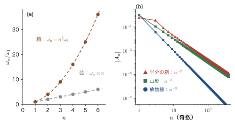
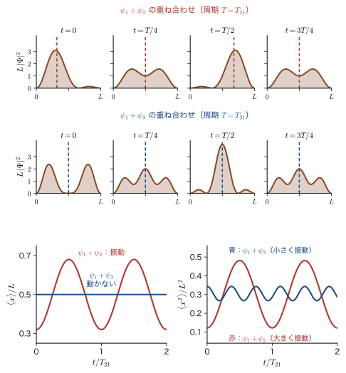
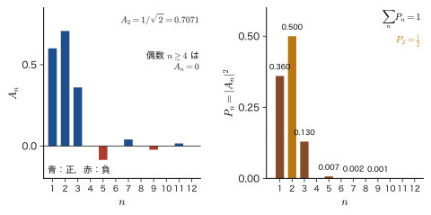
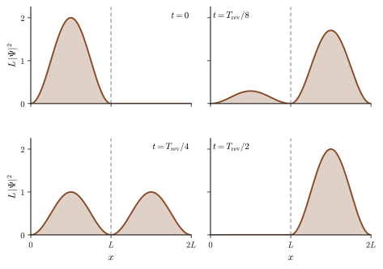
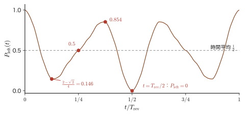
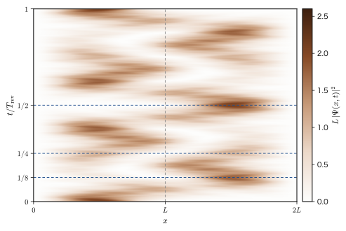
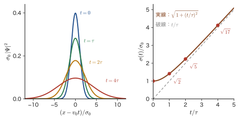

第49章時間依存の Schrödinger 方程式 — 定常状態の重ね合わせと箱の中の波
ここまでの第III〜VIII部で，私たちはほとんど一貫して「時間を含まない Schrödinger（シュレーディンガー）方程式」$\hat{H}\psi=E\psi$ を解いてきた．箱の中の粒子，調和振動子，水素原子，ヘリウム，分子軌道，結晶のバンド，遷移金属イオンの $d$ 準位の分裂——どれも，エネルギーの固有値と固有関数，すなわち定常状態を求める問題だった．最低エネルギーの基底状態（ground state）だけを問題にするなら，これで十分である．外から何もしなければ，基底状態は永久に変わらないので，時間を追いかける必要がなかったからである．
ところが，材料が「はたらく」場面のほとんどは，基底状態の外にある．ルビーが赤いのは，$\mathrm{Cr^{3+}}$ の $3d$ 電子が光を吸って励起状態（excited state）へ上がるからであり（第VIII部），LED が光るのは励起された電子が下の準位に落ちるからである．太陽電池は，光で励起された電子と正孔が電流になる前に消えてしまわないかどうかの勝負であり，触媒反応では，結合が切れてつながるという時間変化そのものが主題になる．励起状態を扱うとき，なぜ時間の変化を追う必要があるのか．これを 3 つの理由にまとめて述べるのが 49.1 節で，この章が第IX部全体の動機になる．
そこで，時間を含む Schrödinger 方程式 $i\hbar\,\partial\Psi/\partial t=\hat{H}\Psi$ を，もっとも簡単な場合に，式を 1 行も飛ばさずに解こう．方針は，弦の振動（AD 03「大学基礎物理学」第17章 17.3）の固有振動の重ね合わせとよく似ている．(1) まず変数分離で，時間とともに位相だけが回る定常状態 $\psi_n(x)\,e^{-iE_nt/\hbar}$ を求める．(2) 1 つの定常状態では何も動かないので，定常状態を重ね合わせて時間変化をつくる．重ねる重みを決める式が，Fourier 級数の係数の式そのものである．(3) 具体例として，箱の幅が突然 $L$ から $2L$ に広がったとき，波動関数がどう動くかを，展開係数の積分まで式変形を省かずに解き，その先にある完全復活・鏡像・量子カーペットを見る．(4) 壁のない自由空間では波は広がり続けることを，Gauss 波束で見る．古典力学では，質点の運動方程式が時間について 2 階なので，初期位置と初速度の 2 つを与える必要があった．Schrödinger 方程式は時間について 1 階なので，初期の波動関数 $\Psi(x,0)$ 1 つを与えれば，あとは完全に決まる．この違いも，この章で確かめる．
この部の見取り図．第IX部は，次の 7 つの章からなる．第VIII部では，$d$ 準位の分裂 $\Delta_{\mathrm o}$ を求め，その大きさが可視光のエネルギーに近いことから，ルビーやエメラルドの色を説明した（第48章）．そこでは「エネルギー差 $\Delta E$ に等しい光子 $h\nu=\Delta E$ が吸収される」という Bohr の振動数条件（第5章）を，既知の事実として使った．第IX部は，その先——吸収や発光は，量子力学の言葉でどのように起こるのか，どれだけの速さで起こるのか，なぜ起こる遷移と起こらない遷移があるのか——に答える．
| 章 | 題目 | 内容のひとこと |
|---|---|---|
| 第49章（本章） | 時間依存の Schrödinger 方程式 | 定常状態の重ね合わせで波動関数の時間変化をつくる．箱の中の波の復活と，自由空間での広がり |
| 第50章 | 時間発展演算子と 3 つの描像 | $e^{-i\hat{H}t/\hbar}$ で時間発展を演算子の言葉に書き直す．Schrödinger・Heisenberg・相互作用表示 |
| 第51章 | 時間依存摂動論と Fermi の黄金律 | 光などの外場で遷移が起こる確率．Rabi 振動．断熱近似 |
| 第52章 | 光の吸収と放出 | 電気双極子近似，選択則，Einstein の係数，励起状態の寿命とスペクトルの線幅 |
| 第53章 | 誘導放出とレーザー，材料の光吸収スペクトル | 反転分布とレーザー．半導体の吸収端と錯体の色 |
| 第54章 | 線形応答と Kubo 公式の入口 | 外場への応答と因果律，Kramers–Kronig の関係，複素誘電率 |
| 第55章 | 伝搬関数と Green 関数への入口 | 時間発展を 1 つの関数にまとめる．局所状態密度と寿命 |
本章で導く「定常状態の重ね合わせ」の係数 $A_n$ と位相因子 $e^{-iE_nt/\hbar}$ は，第50章で時間発展演算子の固有展開として書き直され，第51章では外場によって係数 $A_n$ が時間とともに変わる問題へ，第55章では伝搬関数 $\sum_n\psi_n(x)\psi_n^*(x')e^{-iE_n(t-t')/\hbar}$ へと一般化される．すべての出発点は，この章の式 $\Psi=\sum_nA_n\psi_n\,e^{-iE_nt/\hbar}$ である．第IX部は，姉妹編の「線形応答理論（AD 08）」（目次）の時間依存の量子力学への土台でもある．
- 基底状態だけなら時間を考えなくてよいのに，励起状態や遷移を扱うには時間の変化を追う必要がある理由を，3 つ（励起状態をつくる操作，励起状態の寿命，材料の機能の時間依存性）にまとめて説明できること
- 変数分離で $\Psi(x,t)=A\,\psi(x)\,e^{-iEt/\hbar}$ を導き，定常状態では $\abs{\Psi}^2$ も時間に陽によらない物理量の期待値も動かないことを証明できること
- 定常状態の重ね合わせ $\Psi=\sum_nA_n\psi_n(x)e^{-iE_nt/\hbar}$，展開係数 $A_n=\int\psi_n^*\Psi(x,0)\dd x$，規格化 $\sum_n\abs{A_n}^2=1$，エネルギーの期待値 $\expval{E}=\sum_n\abs{A_n}^2E_n$，連続の式 $\partial\rho/\partial t+\partial j/\partial x=0$ を使えること
- 箱の中の粒子の時間依存解が「各時刻で正弦 Fourier 級数」であること，2 つの状態の重ね合わせの量子ビート $\expval{x}=\tfrac{L}{2}-\tfrac{16L}{9\pi^2}\cos\omega_{21}t$ を導けること
- 箱の幅が突然 $L$ から $2L$ に広がる問題を，積→和の公式と $\sin\frac{(n\mp2)\pi}{2}$ の場合分けを使って，展開係数 $A_2=\tfrac{1}{\sqrt2}$，$A_{2k-1}=\dfrac{4\sqrt2\,(-1)^k}{(2k+1)(2k-3)\pi}$ まで解き切れること
- 復活時間 $T_{\mathrm{rev}}=16mL^2/(\pi\hbar)$，半周期での鏡像 $\Psi(x,T_{\mathrm{rev}}/2)=-\Psi(2L-x,0)$，量子カーペット，突然近似（$\mathrm{{}^3H}\to\mathrm{{}^3He^+}$ で $0.702$）を説明できること
- 自由粒子の Gauss 波束の広がり $\sigma(t)=\sigma_0\sqrt{1+(\hbar t/2m\sigma_0^2)^2}$ を導き，電子・陽子・日用品でその時間尺度 $\tau=2m\sigma_0^2/\hbar$ を見積もれること
- 本書の前の章：Born の確率解釈・期待値・時間とエネルギーの不確定性（第8章），Schrödinger 方程式・確率の保存則・Ehrenfest の定理（第9章．Ehrenfest の定理は 9.4 節にまとめてあるので，この章では再掲しない），箱の中の粒子と Dirac 記法（第10章．10.5 節にも時間依存の話の予告がある），運動量表示の Fourier 変換の規約（第2章）．
- 数学：変数分離形の 1 階微分方程式（大学数学 第33章 33.2），関数の内積と直交展開（大学数学 第27章 27.2），Fourier 正弦級数（大学数学 第28章 28.3），Euler の公式（大学数学 第21章 21.4），積→和の公式（高校数学 第5章 5.5），Gauss 関数の Fourier 変換（大学数学 第30章 30.4）．
- 物理：波束と群速度（大学基礎物理学 第17章 17.5）．
- 姉妹編との関係：大学数学 第45章では，無限井戸の時間変動する解を数学の側面から導いた（45.4）．本章は，物理として最初から丁寧に解き直し，その先（箱の幅の変化・完全復活・波束の広がり）まで進む．
49.1 なぜ時間を追うのか — 基底状態と励起状態
49.1.1 これまでの量子力学は「止まった絵」だった
第III部以降で私たちが解いてきた方程式は，時間を含まない Schrödinger 方程式
\begin{equation} \hat{H}\psi(x)=E\,\psi(x),\qquad \hat{H}=-\frac{\hbar^2}{2m}\frac{\dd^2}{\dd x^2}+V(x) \label{eq:49-tise} \end{equation}であった．解 $\psi_n(x)$ は定常状態の波動関数の空間部分で，エネルギー固有値 $E_n$ とセットで決まる．この章では，状態の番号を，一般論では $n=0,1,2,\dots$（基底状態が $n=0$），箱の中の粒子と水素原子では $n=1,2,\dots$（基底状態が $n=1$）と数える約束を，本書のほかの章と同じように守る．この章の主役の箱の中の粒子では，$n=1,2,3,\dots$ である．
基底状態の波動関数に時間因子をつけた $\Psi(x,t)=\psi_1(x)\,e^{-iE_1t/\hbar}$ は，位相が回るだけで，確率密度 $\abs{\Psi}^2$ も，期待値も，永遠に変わらない（次の 49.1.4 節で証明する）．しかも，基底状態は最低エネルギーなので，エネルギーを放出して下の状態に落ちることもできない．孤立した系の基底状態は，放っておけばずっとそのままである．結晶の格子定数，分子の結合の長さ，絶対零度でのバンド構造など，「物質がどういう形をしているか」という静的な性質を求めるだけなら，時間を追う必要がなかった．これが，ここまでの量子力学が「止まった絵」で済んだ理由である．
49.1.2 励起状態を扱うには，時間を追う必要がある
しかし，励起状態や遷移を扱いはじめると，時間を避けて通れなくなる．理由は 3 つある．
考察：励起状態には時間の変化を追う必要がある 3 つの理由
(i) 励起状態を「つくる」操作は，時間に依存する操作である．励起状態をつくるには，光を当てる，電子線を当てる，温める，電圧をかけるなど，系に外から何かをする．これらの操作は，ハミルトニアンに時間に依存する項 $\hat{H}_1(t)$ を加える．最初に基底状態にあった系は，操作の途中では基底状態でも励起状態でもない，両者の重ね合わせの状態（次の 49.2 節で見るように，エネルギー固有状態でない，すなわち定常状態でない状態）を通り，その重ね合わせの中の励起状態の割合 $\abs{A_{\mathrm{ex}}(t)}^2$ が，時間とともに増えていく．「光を当てたら励起状態になった」という一言の中身は，この時間変化である（第51章）．
(ii) 励起状態は，永久には続かない．水素原子の $2p$ 状態は，原子だけのハミルトニアン $\hat{H}$ の固有状態であり，$\hat{H}$ だけを見れば定常状態である．しかし，現実の原子は真空の電磁場と結合しており，$2p$ 状態は約 $1.6\ \mathrm{ns}$（$1.6\times10^{-9}\ \mathrm{s}$）で光子を放出して $1s$ 状態に落ちる（第52章）．真空の電磁場も量子力学的な系であり，光子が 0 個の状態でも「ゆらぎ」をもつので，励起状態は自然に光子を放出する．これを正確に扱うには電磁場の量子化が必要で，第60章で学ぶ．第52章では，電磁場を古典的な波として扱う半古典的な方法で調べる．原子＋電磁場という全体のハミルトニアンから見れば，「$2p$ 状態の原子」は厳密な固有状態ではなく，寿命をもつ．一方，基底状態には落ちる先がないので寿命が無限大である．寿命は励起状態に特有の性質であり，これを計算するには時間の発展を追う必要がある．
(iii) 材料の機能の多くは，時間変化の現象である．吸収と発光（ルビーの色，LED，レーザー），励起エネルギーが熱に変わる緩和，電子が結晶の中を流れる電気伝導，化学反応と触媒，電池の充放電——これらはすべて「何かが時間とともに変わる」現象であり，知りたいのは静的なエネルギーではなく，速さ・寿命・応答の大きさである．
(ii) の寿命とエネルギーの関係には，第8章 8.8 節で学んだ時間とエネルギーの不確定性 $\Delta E\,\Delta t\gtrsim\hbar/2$ が関わる．寿命 $\tau_{\mathrm{life}}$ の状態のエネルギーは，$\Delta E\approx\hbar/\tau_{\mathrm{life}}$ 程度の不確かさをもつ．次の例題で，その大きさを見積もってみよう．
例題49.1 水素の $2p$ 状態のエネルギーの幅
水素原子の $2p$ 状態の寿命を $\tau_{\mathrm{life}}=1.6\ \mathrm{ns}$ とする．(1) エネルギーの不確かさ $\Delta E\approx\hbar/\tau_{\mathrm{life}}$ を $\mathrm{eV}$ で求めよ．(2) $2p$ と $1s$ のエネルギー差 $E_2-E_1=10.2\ \mathrm{eV}$ に対する比を求めよ．
解答 (1) $\hbar=1.054\,572\times10^{-34}\ \mathrm{J\,s}$ なので，$\Delta E\approx\dfrac{\hbar}{\tau_{\mathrm{life}}}=\dfrac{1.0546\times10^{-34}\ \mathrm{J\,s}}{1.6\times10^{-9}\ \mathrm{s}}=6.59\times10^{-26}\ \mathrm{J}$．$1\ \mathrm{eV}=1.602\,177\times10^{-19}\ \mathrm{J}$ で割って，$\Delta E\approx4.1\times10^{-7}\ \mathrm{eV}$ である．
(2) $\dfrac{\Delta E}{E_2-E_1}=\dfrac{4.1\times10^{-7}}{10.2}=4.0\times10^{-8}$．エネルギーの幅は準位間隔の 1 億分の 4 ほどしかない．したがって，$2p$ 状態を「エネルギーが $-3.40\ \mathrm{eV}$ の状態」と考えてよいことに変わりはなく，ほぼ定常状態とみなして準位を求める第III部以降のやり方は正しい．ただし，この微小な幅が，スペクトル線の自然幅（第52章）になって実際に観測される．
注意：「励起状態」と「非定常状態」は別の言葉
「励起状態」は，基底状態より高いエネルギーの固有状態（例：箱の中の粒子の $n=2$ 状態）を指す．それ自体は，$\Psi=\psi_2(x)e^{-iE_2t/\hbar}$ という定常状態であり，$\abs{\Psi}^2$ は動かない．動くのは，エネルギーの異なる 2 つ以上の固有状態が混ざった状態，すなわち「非定常状態」である．光を当てて励起するとは，基底状態に励起状態を「混ぜる」操作であり，混ぜたあとの状態が動く．厳密な固有状態が動かないことと，励起状態が寿命をもつことは，矛盾しない．後者は，(ii) で述べたとおり，「原子だけ」の固有状態が，「原子＋光」の全体の固有状態ではないためである．
応用：時間を測る — 発光寿命とフェムト秒分光
蛍光体やレーザー結晶の発光寿命（励起してから光を放って基底状態に戻るまでの平均時間）は，物質によって ns から ms まで大きく異なる．たとえば，ルビー（$\mathrm{Cr^{3+}}$ を含む $\mathrm{Al_2O_3}$）の赤い発光の寿命は数 ms という，原子の $2p$ 状態の寿命（約 $1.6\ \mathrm{ns}$）より 6 桁ほども長い値をもつ．この長い寿命が，ルビーをレーザー材料として使える理由の 1 つである（第53章）．半導体のキャリア寿命（励起された電子と正孔が再結合して消えるまでの時間）は，発光ダイオードや太陽電池の効率を決める．光触媒では，光で励起された電子と正孔が表面の反応に使われる前に再結合してしまうので，寿命と反応速度の競争になる．化学反応や固体中の電子の緩和は，さらに速く，数十〜数百 fs（$1\ \mathrm{fs}=10^{-15}\ \mathrm{s}$）で進むことが多い．これを見るために，フェムト秒のレーザーパルスで励起し，遅れて到着する別のパルスで状態を調べるポンプ・プローブ分光が使われる．この章で導く「電子が $1\ \mathrm{nm}$ の箱の中で振動する周期は数 fs」という結果（49.3 節）は，この時間尺度の目安になる．
49.1.3 時間を含む Schrödinger 方程式と，波動関数の「決定論」
時間を追うための方程式は，時間を含む Schrödinger 方程式である．第9章で導いたとおり，1 次元で $V=V(x)$ のとき，
\begin{equation} i\hbar\,\frac{\partial\Psi(x,t)}{\partial t}=\hat{H}\,\Psi(x,t)=-\frac{\hbar^2}{2m}\frac{\partial^2\Psi}{\partial x^2}+V(x)\,\Psi \label{eq:49-tdse} \end{equation}である．左辺の $i\hbar$ は，$-\dfrac{\hbar}{i}$ と同じである（$\dfrac1i=-i$ なので $-\dfrac{\hbar}{i}=i\hbar$）．第9章や AD 02 第45章では $-\hbar/i$ の形で書いたが，本章では $i\hbar$ の形で書く．ここで大切なのは，この方程式が時間 $t$ について 1 階であることである．Newton の運動方程式 $m\ddot{x}=F$ が時間について 2 階で，未来を決めるには初期位置 $x(0)$ と初速度 $\dot{x}(0)$ の 2 つが必要だったのに対し，式 \eqref{eq:49-tdse} では，ある時刻の波動関数 $\Psi(x,0)$ を 1 つ与えれば，以後のすべての時刻の $\Psi(x,t)$ が一意に決まる．波動関数の時間変化は完全に決定論的である．確率が現れるのは，測定して粒子の位置などを調べるときだけである（Born の確率解釈，第8章）．
49.1.4 定常状態と非定常状態 — 動かないことの証明
定義49.1 定常状態
ハミルトニアン $\hat{H}$（時間によらない）の 1 つの固有状態 $\psi_E(x)$（$\hat{H}\psi_E=E\psi_E$）に，時間因子をつけた
\begin{equation} \Psi(x,t)=\psi_E(x)\,e^{-iE t/\hbar} \label{eq:49-stat} \end{equation}を定常状態（stationary state）という．次の節で見るように，これは時間を含む方程式 \eqref{eq:49-tdse} の解である．なお，$\abs{e^{-iEt/\hbar}}=1$ である（Euler の公式 $e^{i\theta}=\cos\theta+i\sin\theta$ より，$\abs{e^{i\theta}}^2=\cos^2\theta+\sin^2\theta=1$）．
定理49.1 定常状態は動かない
定常状態 \eqref{eq:49-stat} では，確率密度 $\abs{\Psi(x,t)}^2$ も，時間に陽によらない演算子 $\hat{A}$（位置 $\hat{x}$，運動量 $\hat{p}=-i\hbar\,\partial/\partial x$，エネルギー $\hat{H}$ など）の期待値 $\expval{A}=\displaystyle\int\Psi^*\hat{A}\Psi\dd x$ も，時間によらない．
証明
確率密度は，$\abs{\Psi}^2=\Psi^*\Psi=\psi_E^*e^{+iEt/\hbar}\,\psi_Ee^{-iEt/\hbar}=\abs{\psi_E(x)}^2$ である．途中で，$E$ が実数（エネルギーの固有値）なので $\left(e^{-iEt/\hbar}\right)^*=e^{+iEt/\hbar}$ となること，および $e^{iEt/\hbar}e^{-iEt/\hbar}=e^0=1$ を使った．
期待値については，$\hat{A}$ が $x$ と $\partial/\partial x$ だけを含み，$t$ には陽によらないので，$t$ だけの関数 $e^{-iEt/\hbar}$ は $\hat{A}$ の外に出せる：$\hat{A}\bigl(\psi_Ee^{-iEt/\hbar}\bigr)=e^{-iEt/\hbar}\hat{A}\psi_E$．したがって
$$ \expval{A}(t)=\int\psi_E^*\,e^{+iEt/\hbar}\;e^{-iEt/\hbar}\,\hat{A}\psi_E\dd x=\int\psi_E^*\,\hat{A}\,\psi_E\dd x $$となって，$t$ が消える．位相因子 $e^{+iEt/\hbar}$ は $\Psi^*$ から，$e^{-iEt/\hbar}$ は $\Psi$ から来るので，かけ合わさって打ち消し合うのである．
（証明終わり）
定理49.1 の逆も大切なので，先に結論を述べておく（証明は 49.2 節）．エネルギーの異なる 2 つ以上の固有状態が混ざった状態（非定常状態）では，確率密度が時間とともに変わる．つまり，次のように判定できる．
- エネルギー固有状態が 1 つだけ（あるいは，同じエネルギーをもつ縮退した状態だけの重ね合わせ）→ 定常状態．動かない．
- エネルギーの異なる固有状態の重ね合わせ → 非定常状態．確率密度が，エネルギー差 $/\hbar$ の角振動数で振動する．
例題49.2 箱の中の粒子 $n=3$ の定常状態は動かない
幅 $L$ の箱（$0\le x\le L$）の $n=3$ の状態 $\Psi_3(x,t)=\sqrt{\dfrac{2}{L}}\sin\dfrac{3\pi x}{L}\,e^{-iE_3t/\hbar}$ について，$\expval{x}$，$\expval{p}$，$\expval{x^2}$ を求め，時間によらないことを確かめよ．
解答 一般に $n$ 番目の状態について計算する．$\psi_n=\sqrt{2/L}\sin\dfrac{n\pi x}{L}$ は実数なので，位相因子は定理49.1 の証明のとおり打ち消し合い，$\expval{A}=\displaystyle\int_0^L\psi_n\,\hat{A}\,\psi_n\dd x$ となる．
$\expval{x}$．$\abs{\psi_n}^2$ は $x=L/2$ について対称（$\psi_n(L-x)^2=\psi_n(x)^2$）である．$u=L-x$ と置換すると，$\displaystyle\int_0^Lx\,\psi_n^2\dd x=\int_0^L(L-u)\,\psi_n(u)^2\dd u=L-\int_0^Lu\,\psi_n(u)^2\dd u$ となる（規格化 $\int\psi_n^2=1$ を使った）．左辺を $I$ とおくと $I=L-I$ なので，$\expval{x}=I=\dfrac{L}{2}$ である．
$\expval{p}$．$\hat{p}\psi_n=-i\hbar\,\psi_n'$ なので，$\expval{p}=-i\hbar\displaystyle\int_0^L\psi_n\psi_n'\dd x=-\dfrac{i\hbar}{2}\Bigl[\psi_n^2\Bigr]_0^L=0$（$\psi\psi'=\frac12(\psi^2)'$ で，$\psi_n(0)=\psi_n(L)=0$）．
$\expval{x^2}$．$\sin^2\theta=\dfrac{1-\cos2\theta}{2}$ で，$\theta=\dfrac{n\pi x}{L}$ とおくと，$\displaystyle\expval{x^2}=\frac{2}{L}\int_0^Lx^2\sin^2\frac{n\pi x}{L}\dd x=\frac{1}{L}\int_0^Lx^2\dd x-\frac{1}{L}\int_0^Lx^2\cos\frac{2n\pi x}{L}\dd x$．第 1 項は $\dfrac{L^2}{3}$．第 2 項は，$q=\dfrac{2n\pi}{L}$ として部分積分を 2 回行う：$\displaystyle\int_0^Lx^2\cos qx\dd x=\Bigl[\frac{x^2\sin qx}{q}\Bigr]_0^L-\frac{2}{q}\int_0^Lx\sin qx\dd x$．$\sin qL=\sin2n\pi=0$ なので第 1 項は $0$．残りは $\displaystyle\int_0^Lx\sin qx\dd x=\Bigl[-\frac{x\cos qx}{q}\Bigr]_0^L+\frac{1}{q}\int_0^L\cos qx\dd x=-\frac{L}{q}+0$（$\cos qL=1$，$\int_0^L\cos qx\dd x=\sin qL/q=0$）．よって $\displaystyle\int_0^Lx^2\cos qx\dd x=-\frac{2}{q}\Bigl(-\frac{L}{q}\Bigr)=\frac{2L}{q^2}=\frac{2L^3}{4n^2\pi^2}$ となり，
$$ \expval{x^2}=\frac{L^2}{3}-\frac{1}{L}\cdot\frac{L^3}{2n^2\pi^2}=L^2\left(\frac{1}{3}-\frac{1}{2n^2\pi^2}\right) $$である．$n=3$ では $\expval{x^2}=L^2\Bigl(\dfrac13-\dfrac{1}{18\pi^2}\Bigr)=0.3277\,L^2$ である．以上の $\expval{x}=L/2$，$\expval{p}=0$，$\expval{x^2}=0.3277L^2$ には，どこにも $t$ が現れない．定常状態の期待値は時間によらないことが，具体的に確かめられた．
49.2 変数分離と定常状態，そして重ね合わせ
49.2.1 変数分離 — 時間の部分と空間の部分に分ける
時間を含む Schrödinger 方程式 \eqref{eq:49-tdse} を，$V=V(x)$（$V$ が時間によらない）の場合に解く．まず，波動関数が，$x$ だけの関数 $\psi(x)$ と $t$ だけの関数 $T(t)$ の積になっている特別な場合を探してみよう．これを変数分離（separation of variables）という（同じ手順は第9章 9.5.1 節でも示した）：
\begin{equation} \Psi(x,t)=\psi(x)\,T(t) \label{eq:49-sep} \end{equation}式 \eqref{eq:49-tdse} を，$-\hbar/i=i\hbar$ を使って $-\dfrac{\hbar}{i}$ の形に書き直すと，
\begin{equation} -\frac{\hbar^2}{2m}\frac{\partial^2\Psi}{\partial x^2}+V(x)\Psi=-\frac{\hbar}{i}\frac{\partial\Psi}{\partial t} \label{eq:49-tdse2} \end{equation}である（$x$ だけに作用する左辺と，$t$ だけに作用する右辺が，きれいに分かれている形である．3 次元では $\dfrac{\partial^2}{\partial x^2}$ を $\nabla^2$ に読み替えればよい）．式 \eqref{eq:49-sep} を代入する．$\dfrac{\partial^2\Psi}{\partial x^2}=\psi''(x)\,T(t)$（$T$ は $x$ によらない定数のように振る舞う），$\dfrac{\partial\Psi}{\partial t}=\psi(x)\,\dot{T}(t)$（$\dot{T}=\dd T/\dd t$）なので，
$$ -\frac{\hbar^2}{2m}\psi''\,T+V\psi\,T=-\frac{\hbar}{i}\,\psi\,\dot{T} $$となる．両辺を $\psi(x)\,T(t)$ で割ると，
\begin{equation} \frac{1}{\psi(x)}\left[-\frac{\hbar^2}{2m}\psi''(x)+V(x)\psi(x)\right]=-\frac{\hbar}{i}\,\frac{\dot{T}(t)}{T(t)} \label{eq:49-sep2} \end{equation}である．左辺は $x$ だけの関数，右辺は $t$ だけの関数である．$x$ と $t$ は独立な変数なので，たとえば $t$ を固定したまま $x$ を動かしても右辺は変わらない．それでも等号が成り立つためには，左辺も $x$ によらない定数でなければならず，同じ理由で右辺も $t$ によらない定数である．つまり，両辺は同じ定数に等しい．左辺は $\hat{H}\psi/\psi$ なので，この定数はエネルギーの次元をもつ．これを $E$ と書く（分離定数）．こうして，式 \eqref{eq:49-sep2} は次の 2 つの方程式に分かれる：
\begin{equation} \begin{cases} -\dfrac{\hbar^2}{2m}\psi''+V(x)\,\psi=E\,\psi & (x\ \text{の関数})\\[3mm] -\dfrac{\hbar}{i}\,\dfrac{\dd T}{\dd t}=E\,T & (t\ \text{の関数}) \end{cases} \label{eq:49-sepeqs} \end{equation}第 1 式は，第III部で何度も解いた時間を含まない Schrödinger 方程式 $\hat{H}\psi=E\psi$ そのものである．つまり，分離定数 $E$ は，エネルギーの固有値になる．
なぜ分離定数 $E$ は実数なのか
もし $E=E_{\mathrm R}+iE_{\mathrm I}$（$E_{\mathrm R},E_{\mathrm I}$ は実数）だったとすると，次に求める解は $T(t)\propto e^{-iEt/\hbar}=e^{-iE_{\mathrm R}t/\hbar}\,e^{E_{\mathrm I}t/\hbar}$ となり，$\abs{T}^2\propto e^{2E_{\mathrm I}t/\hbar}$ が時間とともに増えるか減るかする．すると $\displaystyle\int\abs{\Psi}^2\dd x=\abs{T}^2\int\abs{\psi}^2\dd x$ が $t$ とともに変わってしまい，「粒子が全空間のどこかに必ずいる確率は $1$」という規格化と矛盾する．$V$ が実数のとき，確率の総和が時間によらないことは 49.2.5 節で示す．したがって $E_{\mathrm I}=0$，すなわち $E$ は実数である．
第 2 式は $t$ だけの 1 階微分方程式で，すぐに解ける．$-\dfrac{\hbar}{i}=i\hbar$ なので $i\hbar\dot{T}=ET$，すなわち $\dot{T}=-\dfrac{iE}{\hbar}T$ である（$\dfrac1i=-i$）．変数分離形（大学数学 第33章 33.2）として $\dfrac{\dd T}{T}=-\dfrac{iE}{\hbar}\dd t$ と書き，両辺を積分すると $\ln T=-\dfrac{iE}{\hbar}t+(\text{定数})$，すなわち $T(t)=T(0)\,e^{-iEt/\hbar}$ を得る．微分すると確かに $\dot{T}=-\dfrac{iE}{\hbar}T$ となる．定数 $T(0)$ を $\psi(x)$ の定数倍にまとめて，定数 $A$ にすれば，式 \eqref{eq:49-sep} の解は
\begin{equation} \Psi(x,t)=A\,\psi(x)\,e^{-iEt/\hbar} \label{eq:49-sol1} \end{equation}である．時間因子 $e^{-iEt/\hbar}=e^{-i\omega t}$ は，角振動数 $\omega=E/\hbar$ で回る位相である（Planck–Einstein の関係 $E=\hbar\omega$，第4章）．これは，平面波 $e^{i(kx-\omega t)}$ の時間部分と同じ形である．また，$\abs{e^{-iEt/\hbar}}=1$ なので，前節（定理49.1）のとおり，確率密度 $\abs{\Psi}^2=\abs{A}^2\abs{\psi}^2$ は時間によらない．
注意：変数分離は「解の族」をつくる手段であって，一般解ではない
式 \eqref{eq:49-sol1} は，変数分離できる特別な解である．一般の波動関数は $\psi(x)T(t)$ の形に書けない（次の 49.2.2 節の重ね合わせは，積の形でない）．なぜ $x$ と $t$ の積に分けてよいのか，と疑問に思うかもしれないが，分離してよい理由は，「分離した解をたくさんつくっておけば，その重ね合わせで一般の解が表せる」ことにある．つまり，分離は，一般解を組み立てるための部品（定常状態）を得る手段である．
49.2.2 1 つの解では現象を説明できない — 重ね合わせ
式 \eqref{eq:49-sol1} の状態は，定常状態（定義49.1）であり，定理49.1 により，確率密度も期待値も動かない．したがって，ほとんどの現象——光の放出，電子の運動，化学反応など，何かが変化する現象——は，この解 1 つでは説明できない．そこで，複数の定常状態を重ね合わせる（第9章 9.5.3 節で，重ね合わせから時間変化がつくられることを先に述べた）．
考察：なぜ重ね合わせても方程式の解なのか
Schrödinger 方程式 \eqref{eq:49-tdse} は $\Psi$ について線形である．すなわち，$\Psi_1$ と $\Psi_2$ が解で $c_1,c_2$ が定数なら，$c_1\Psi_1+c_2\Psi_2$ も解である．実際，$i\hbar\dfrac{\partial}{\partial t}$ も $\hat{H}$ も線形な演算子なので，
$$ i\hbar\frac{\partial}{\partial t}\bigl(c_1\Psi_1+c_2\Psi_2\bigr)=c_1\,i\hbar\frac{\partial\Psi_1}{\partial t}+c_2\,i\hbar\frac{\partial\Psi_2}{\partial t}=c_1\hat{H}\Psi_1+c_2\hat{H}\Psi_2=\hat{H}\bigl(c_1\Psi_1+c_2\Psi_2\bigr) $$が成り立つ．これが重ね合わせの原理である．エネルギー固有値 $E_n$ に属する定常状態 $\psi_n(x)\,e^{-iE_nt/\hbar}$ はどれも解だから，それらを足した
\begin{equation} \Psi(x,t)=\sum_{n}A_n\,\psi_n(x)\,e^{-iE_nt/\hbar} \label{eq:49-super} \end{equation}も解である．$A_n$ は複素数の定数で，箱の中の粒子では $n=1,2,3,\dots$ について足す．この式 \eqref{eq:49-super} が，時間を含む Schrödinger 方程式の（任意の初期状態に対する）一般解である．なぜ一般の初期状態をこの形で表せるのか（$\{\psi_n\}$ が完全系をなすこと）は，次の 49.2.3 節の囲みで定義し，箱の場合は 49.3.2 節で Fourier 級数として見る．
数学の道具：線形微分方程式の重ね合わせと，直交関数系による展開
線形同次な微分方程式の解の全体が「足し算と定数倍で閉じている」（ベクトル空間をなす）ことは，2 階線形微分方程式の一般解が「2 つの独立な解の線形結合」であることの根拠でもある（大学数学 第35章 35.4）．解の集合 $\{\psi_n\}$ が互いに直交しているとき，任意の関数 $f$ を $f=\sum_nA_n\psi_n$ と展開して，係数を内積 $A_n=\int\psi_n^*f\dd x$ で取り出す方法は，Fourier 級数そのものである（大学数学 第27章 27.1，27.2）．
49.2.3 展開係数 $A_n$ の決め方，規格化，エネルギーの期待値
式 \eqref{eq:49-super} の係数 $A_n$ は，初期状態 $\Psi(x,0)$ で決まる．$t=0$ とおくと $e^{-iE_n\cdot0/\hbar}=1$ なので，
$$ \Psi(x,0)=\sum_nA_n\,\psi_n(x) $$である．これは，関数 $\Psi(x,0)$ を $\{\psi_n\}$ で展開する式である．固有関数が正規直交（$\int\psi_m^*\psi_n\dd x=\delta_{mn}$）であることを使うと，$A_n$ が取り出せる．
導出：$A_n$，規格化，$\expval{E}$
[i] 係数．$\Psi(x,0)=\sum_nA_n\psi_n(x)$ の両辺に左から $\psi_m^*(x)$ を掛けて，全空間（箱なら $0\le x\le L$）で積分する：
$$ \int\psi_m^*\,\Psi(x,0)\dd x=\sum_nA_n\int\psi_m^*\psi_n\dd x=\sum_nA_n\,\delta_{mn}=A_m $$となる（Kronecker（クロネッカー）のデルタ $\delta_{mn}$ は $m=n$ のときだけ $1$ で，和の中で $n=m$ の項だけが残る）．記号 $m$ を $n$ に戻すと，次の式を得る（Dirac 記法 $\braket{\psi_n}{\Psi(0)}$ は，第10章 10.2 で導入した内積の書き方である）：
\begin{equation} A_n=\int\psi_n^*(x)\,\Psi(x,0)\dd x=\braket{\psi_n}{\Psi(0)} \label{eq:49-An} \end{equation}ベクトル $\bm{v}=\sum_iv_i\bm{e}_i$ の成分が $v_i=\bm{e}_i\cdot\bm{v}$ で取り出せるのと同じ構造である．
[ii] 規格化と時間不変性．時刻 $t$ で $\abs{\Psi}^2$ を積分すると，
$$ \int\abs{\Psi(x,t)}^2\dd x=\sum_{m,n}A_m^*A_n\,e^{i(E_m-E_n)t/\hbar}\int\psi_m^*\psi_n\dd x=\sum_{m,n}A_m^*A_n\,e^{i(E_m-E_n)t/\hbar}\,\delta_{mn}=\sum_n\abs{A_n}^2 $$となる（$\Psi^*$ の $\psi_m^*e^{+iE_mt/\hbar}$ と，$\Psi$ の $\psi_ne^{-iE_nt/\hbar}$ の積を展開した．$m\ne n$ の項は直交性で消え，$m=n$ の項では位相が打ち消し合って $t$ が消える）．粒子がどこかに見つかる確率が $1$ であるという規格化の条件 $\int\abs{\Psi}^2\dd x=1$ は，したがって
\begin{equation} \sum_n\abs{A_n}^2=1 \label{eq:49-norm} \end{equation}と同じ意味になり，しかもこの和は時間によらない（Parseval の等式）．
[iii] エネルギーの期待値．$\hat{H}\psi_n=E_n\psi_n$ を使うと，$\hat{H}\Psi=\sum_nA_nE_n\psi_ne^{-iE_nt/\hbar}$ なので，
$$ \expval{E}=\int\Psi^*\hat{H}\Psi\dd x=\sum_{m,n}A_m^*A_nE_n\,e^{i(E_m-E_n)t/\hbar}\int\psi_m^*\psi_n\dd x=\sum_n\abs{A_n}^2E_n $$である．
（導出終わり）
数学の道具：完全系とは — 任意の関数が展開できること
$\{\psi_n\}$ が完全系（complete set）であるとは，（区間で 2 乗可積分な）任意の関数 $f$ が $f=\sum_nc_n\psi_n$ と展開できることをいう．箱の固有関数 $\sin(n\pi x/L)$ では，これは Fourier 正弦級数の収束にあたる（大学数学 第28章 28.3，第29章 29.3）．完全系であれば，上の [ii] と同じ計算で $\int\abs{f}^2\dd x=\sum_n\abs{c_n}^2$（Parseval の等式）が成り立つ．これが $\sum_n\abs{A_n}^2=1$ の根拠である．調和振動子や水素原子の束縛状態のように，$\hat{H}$ が Hermite 演算子である系の固有関数も完全系をなす（この事実は，本書では証明せずに認めて使う）．
定理49.2 定常状態の重ね合わせによる時間発展
時間によらないハミルトニアン $\hat{H}$ の正規直交固有関数 $\{\psi_n\}$（固有値 $E_n$）があり，初期状態が $\Psi(x,0)$ のとき，時刻 $t$ の波動関数は
\begin{equation} \Psi(x,t)=\sum_nA_n\,\psi_n(x)\,e^{-iE_nt/\hbar},\qquad A_n=\int\psi_n^*(x)\Psi(x,0)\dd x \label{eq:49-thm} \end{equation}である．$\Psi$ が規格化されていれば $\sum_n\abs{A_n}^2=1$ で，$P_n=\abs{A_n}^2$ は，エネルギーを測定して $E_n$ が得られる確率（Born の確率解釈を，エネルギー固有状態に適用したもの）であり，時間によらない．エネルギーの期待値は $\expval{E}=\sum_nP_nE_n$ で，これも時間によらない．
ここで，式 \eqref{eq:49-thm} の中身を言葉にしておこう．時間がたっても，各成分の大きさ $\abs{A_n}$（エネルギーを測って $E_n$ を得る確率）は変わらない．変わるのは，各成分の位相 $e^{-iE_nt/\hbar}$ だけである．その位相の回る速さ $E_n/\hbar$ が成分ごとに違うので，成分どうしの位相の関係が時間とともにずれていき，それが $\abs{\Psi}^2$ の形の変化を生む．エネルギーの異なる成分が 2 つ以上あれば，確率密度は
$$ \abs{\Psi(x,t)}^2=\sum_{m,n}A_m^*A_n\,\psi_m^*(x)\psi_n(x)\,e^{i(E_m-E_n)t/\hbar} $$の $m\ne n$ の項（干渉項）が $(E_m-E_n)/\hbar$ の角振動数で振動するので，時間とともに変化する．これが，49.1 節の判定基準（異なるエネルギーの固有状態の重ね合わせは非定常状態）の証明である．この角振動数 $(E_m-E_n)/\hbar$ が，Bohr の振動数条件 $h\nu=E_m-E_n$ の量子力学的な起源である．
例題49.3 重ね合わせの係数，確率，エネルギー，そして相対位相
箱の中の粒子の初期状態が $\Psi(x,0)=\dfrac{1}{5}\bigl[\,3\,\psi_1(x)+4i\,\psi_2(x)\bigr]$（$\psi_n$ は規格化された固有関数）であるとき，(1) 規格化を確かめ，エネルギーの測定値が $E_1$，$E_2$ である確率を求めよ．(2) $\expval{E}$ を $E_1$ で表せ．(3) $\abs{\Psi(x,t)}^2$ を求め，$4i$ の因子 $i$（相対位相）の効果を述べよ．
解答 (1) $A_1=\dfrac{3}{5}$，$A_2=\dfrac{4i}{5}$ で，$\abs{A_1}^2+\abs{A_2}^2=\dfrac{9}{25}+\dfrac{16}{25}=1$．規格化されている．確率は $P_1=\dfrac{9}{25}=0.36$，$P_2=\dfrac{16}{25}=0.64$ である．
(2) $E_n=n^2E_1$ なので，$\expval{E}=P_1E_1+P_2E_2=\dfrac{9}{25}E_1+\dfrac{16}{25}\cdot4E_1=\dfrac{9+64}{25}E_1=\dfrac{73}{25}E_1=2.92\,E_1$．
(3) $\Psi(x,t)=\dfrac{1}{5}\bigl[3\psi_1e^{-i\omega_1t}+4i\psi_2e^{-i\omega_2t}\bigr]$（$\omega_n=E_n/\hbar$）．$\psi_n$ は実数なので，$\abs{a+b}^2=\abs{a}^2+\abs{b}^2+2\Real(a^*b)$ を使うと，
$$ \abs{\Psi}^2=\frac{9}{25}\psi_1^2+\frac{16}{25}\psi_2^2+2\Real\Bigl[\frac{3}{5}\cdot\frac{4i}{5}\,\psi_1\psi_2\,e^{i\omega_1t}e^{-i\omega_2t}\Bigr] $$である．$e^{i\omega_1t}e^{-i\omega_2t}=e^{-i\omega_{21}t}$（$\omega_{21}=\omega_2-\omega_1$）と $ie^{-i\omega_{21}t}=i\cos\omega_{21}t+\sin\omega_{21}t$ から，$\Real\bigl[ie^{-i\omega_{21}t}\bigr]=\sin\omega_{21}t$．よって
$$ \abs{\Psi}^2=\frac{9}{25}\psi_1^2+\frac{16}{25}\psi_2^2+\frac{24}{25}\,\psi_1\psi_2\sin\omega_{21}t $$となる．干渉項は $t=0$ で $0$（$\sin0=0$）から始まり，$\sin$ で振動する．もし $4i$ でなく $4$（実数）だったなら，干渉項は $\cos\omega_{21}t$ となり，$t=0$ で最大から始まる．つまり，2 つの成分の相対位相は，確率密度の振動の「位相」（いつ山が左に寄るか）を決める．全体にかかる位相 $e^{i\alpha}$（$\Psi\to e^{i\alpha}\Psi$）は $\abs{\Psi}^2$ にも期待値にも現れない観測できない量だが，成分間の相対位相は観測にかかる．
49.2.4 位相因子の回転 — 複素平面で見る
位相因子を，複素平面上の矢印として見ると，様子がよくわかる．$e^{-iEt/\hbar}$ は，長さ $1$ の矢印が，時間とともに一定の角速度 $E/\hbar$ で時計まわりに回る様子を表す．定常状態では，波動関数は，$x$ ごとに決まった大きさの矢印が，全体で同じ角速度で回っているだけなので，$\abs{\Psi}^2$（矢印の長さの 2 乗）は変わらない．ところが，角速度の異なる 2 つの矢印を足すと，2 本の矢印のなす角が時間とともに変わり，合成した矢印の長さが，$a+b$（同じ向き）と $\abs{a-b}$（逆向き）の間で脈動する（図49.1）．
49.2.5 確率の保存と連続の式
もう 1 つ，時間を含む方程式の重要な結果を確かめておこう．粒子が勝手に生まれたり消えたりしないなら，確率密度 $\rho(x,t)=\abs{\Psi(x,t)}^2$ の変化は，確率の「流れ」で説明できるはずである．ポテンシャル $V(x)$ が実数のとき，次の定理が成り立つ（第9章 9.3 節で 3 次元で導いたものを，1 次元の形で，式変形を見直しておく．第9章では流れの密度を $J$ と書いたが，本章では $j$ と書く．同じ量である）．
定理49.3 連続の式
$V(x)$ が実数のとき，式 \eqref{eq:49-tdse} の解 $\Psi(x,t)$ に対し，確率密度 $\rho=\abs{\Psi}^2$ と，確率の流れの密度
\begin{equation} j(x,t)=\frac{\hbar}{m}\,\Imag\!\left(\Psi^*\frac{\partial\Psi}{\partial x}\right) \label{eq:49-j} \end{equation}の間に，次の連続の式が成り立つ．
\begin{equation} \frac{\partial\rho}{\partial t}+\frac{\partial j}{\partial x}=0 \label{eq:49-cont} \end{equation}証明
積の微分から $\dfrac{\partial\rho}{\partial t}=\dfrac{\partial\Psi^*}{\partial t}\Psi+\Psi^*\dfrac{\partial\Psi}{\partial t}$ である．式 \eqref{eq:49-tdse} を $i\hbar$ で割る（$\dfrac{1}{i\hbar}=-\dfrac{i}{\hbar}$）と，
$$ \frac{\partial\Psi}{\partial t}=\frac{i\hbar}{2m}\frac{\partial^2\Psi}{\partial x^2}-\frac{i}{\hbar}V\Psi $$である．この複素共役をとる（$\hbar,m,V$ は実数）と，$\dfrac{\partial\Psi^*}{\partial t}=-\dfrac{i\hbar}{2m}\dfrac{\partial^2\Psi^*}{\partial x^2}+\dfrac{i}{\hbar}V\Psi^*$ である．これらを代入すると，
$$ \frac{\partial\rho}{\partial t}=\left[-\frac{i\hbar}{2m}\Psi^{*\prime\prime}+\frac{i}{\hbar}V\Psi^*\right]\Psi+\Psi^*\left[\frac{i\hbar}{2m}\Psi''-\frac{i}{\hbar}V\Psi\right]=\frac{i\hbar}{2m}\bigl(\Psi^*\Psi''-\Psi^{*\prime\prime}\Psi\bigr) $$（$'$ は $x$ での微分．$V$ を含む項は $\pm\frac{i}{\hbar}V\Psi^*\Psi$ で，$V$ が実数だから打ち消し合う）．ここで $\dfrac{\partial}{\partial x}\bigl(\Psi^*\Psi'-\Psi^{*\prime}\Psi\bigr)=\Psi^{*\prime}\Psi'+\Psi^*\Psi''-\Psi^{*\prime\prime}\Psi-\Psi^{*\prime}\Psi'=\Psi^*\Psi''-\Psi^{*\prime\prime}\Psi$ を使うと，
$$ \frac{\partial\rho}{\partial t}=\frac{i\hbar}{2m}\frac{\partial}{\partial x}\bigl(\Psi^*\Psi'-\Psi^{*\prime}\Psi\bigr) $$となる．$z=\Psi^*\Psi'$ とおくと $\Psi^{*\prime}\Psi=z^*$ で，$z-z^*=2i\,\Imag z$ だから，
$$ \frac{\partial\rho}{\partial t}=\frac{i\hbar}{2m}\cdot2i\,\frac{\partial}{\partial x}\Imag\bigl(\Psi^*\Psi'\bigr)=-\frac{\partial}{\partial x}\left[\frac{\hbar}{m}\Imag\bigl(\Psi^*\Psi'\bigr)\right]=-\frac{\partial j}{\partial x} $$（証明終わり）
この結果から，次のことがいえる．(a) $\Psi$ が $x\to\pm\infty$ で（あるいは箱の壁で）$0$ になるなら，$j\to0$ となり，全確率 $\dfrac{\dd}{\dd t}\displaystyle\int\rho\dd x=-\bigl[j\bigr]_{-\infty}^{\infty}=0$，すなわち $\int\abs{\Psi}^2\dd x$ は時間によらない．これは，$\hat{H}$ が Hermite 演算子（$\int\phi^*\hat{H}\psi\dd x=\int(\hat{H}\phi)^*\psi\dd x$ を満たす演算子）であることの帰結で，次章（第50章）で扱う時間発展演算子のユニタリ性（内積を保つ変換であること）につながる．(b) 定常状態 $\Psi=\psi(x)e^{-iEt/\hbar}$ で $\psi$ が実数の関数（箱の中の粒子など）なら，$\Psi^*\Psi'=\psi\psi'$ が実数なので $j=0$ で，流れはない．(c) 流れの密度は，位相の勾配で決まる（$\Psi=\sqrt{\rho}\,e^{iS/\hbar}$ なら $j=\rho\,\partial S/\partial x/m$，第9章 9.3 の例題9.9）．定常状態では動かなかった確率が，重ね合わせではどう流れるかは，49.3 節で具体例として調べる．
49.3 無限井戸の一般解と Fourier 級数 — 量子ビート
49.3.1 無限井戸の定常解 — 復習
この節では，前節の一般論を，もっとも簡単な系である箱の中の粒子（第10章）に適用する．$n=1,2,3,\dots$ と数えることを，もう一度断っておく．井戸の外で $V=\infty$，内側で $V=0$ で，ここでは左の壁を原点にとる：
\begin{equation} V(x)=\begin{cases}0 & (0\le x\le L)\\ \infty & (x\lt0,\ L\lt x)\end{cases} \label{eq:49-V} \end{equation}この場合の定常解（規格化された固有関数と固有値）は，第10章で導いたとおり，
\begin{equation} \psi_n(x)=\sqrt{\frac{2}{L}}\,\sin\frac{n\pi}{L}x,\qquad E_n=\frac{\pi^2\hbar^2}{2mL^2}\,n^2=\frac{h^2}{8mL^2}\,n^2\qquad(n=1,2,\dots) \label{eq:49-psiEn} \end{equation}である．$E_n$ の 2 つの形が同じものであることは，$h=2\pi\hbar$ から $h^2=4\pi^2\hbar^2$ となり，$\dfrac{h^2}{8mL^2}=\dfrac{4\pi^2\hbar^2}{8mL^2}=\dfrac{\pi^2\hbar^2}{2mL^2}$ となることで確かめられる（$h$ 形と $\hbar$ 形）．本書では，以下 $\hbar$ 形を主に使う．
角振動数 $\omega_n=E_n/\hbar$ は，$\omega_n=n^2\omega_1$，$\omega_1=\dfrac{\pi^2\hbar}{2mL^2}$ と書ける．$n$ の 2 乗に比例する，つまり，基本の角振動数 $\omega_1$ の 整数倍になることが，あとで効いてくる．たとえば，電子（$m=m_{\mathrm e}$）を $L=1\ \mathrm{nm}$ の箱に閉じ込めると，$E_1=0.3760\ \mathrm{eV}$，$\omega_1=E_1/\hbar=5.71\times10^{14}\ \mathrm{rad/s}$ である．
49.3.2 時間依存の解は，Fourier 級数そのものである
定常解 $\psi_n(x)\,e^{-iE_nt/\hbar}$ を重ね合わせた，時間を含む Schrödinger 方程式の解（式 \eqref{eq:49-thm} に式 \eqref{eq:49-psiEn} を代入したもの）は，
\begin{equation} \Psi(x,t)=\sum_{n=1}^{\infty}A_n\sqrt{\frac{2}{L}}\,\sin\frac{n\pi}{L}x\;e^{-i\frac{\pi^2\hbar}{2mL^2}n^2t},\qquad A_n=\sqrt{\frac{2}{L}}\int_0^L\sin\frac{n\pi x}{L}\;\Psi(x,0)\dd x \label{eq:49-box} \end{equation}である．この式は，Fourier 級数そのものである．実際，ある時刻 $t$ に固定すると，$\Psi(x,t)$ は，区間 $[0,L]$ 上で両端が $0$ の関数を $\sin\dfrac{n\pi x}{L}$ で展開した正弦 Fourier 級数（大学数学 第28章 28.3）
$$ f(x)=\sum_{n=1}^{\infty}b_n\sin\frac{n\pi x}{L},\qquad b_n=\frac{2}{L}\int_0^Lf(x)\sin\frac{n\pi x}{L}\dd x $$の形をしており，その係数が $b_n(t)=\sqrt{\dfrac{2}{L}}\,A_n\,e^{-i\omega_nt}$ である．$t=0$ の係数 $b_n(0)=\sqrt{2/L}\,A_n$ は，上の Fourier 係数の公式で $f=\Psi(x,0)$ とおいたものなので，$A_n=\sqrt{L/2}\;b_n(0)=\sqrt{L/2}\cdot\dfrac{2}{L}\displaystyle\int_0^L\Psi(x,0)\sin\dfrac{n\pi x}{L}\dd x=\sqrt{\dfrac{2}{L}}\int_0^L\Psi(x,0)\sin\dfrac{n\pi x}{L}\dd x$ となり，式 \eqref{eq:49-box} の $A_n$ に一致する．したがって，初期波形を正弦級数で展開し，各項に回転する位相 $e^{-i\omega_nt}$ をかけるだけで，時間発展が求まる．時間が進むとは，Fourier 係数の位相が，それぞれ決まった速さ $\omega_n$ で回ることである，といってもよい．同じ時間発展を，数学（Fourier 級数と偏微分方程式）の側から解いた記述は，大学数学 第45章 45.4 にある．
イメージ：弦の固有振動との違い — $\omega_n\propto n$ か，$\omega_n\propto n^2$ か
両端を固定した弦の振動も，固有振動 $\sin\dfrac{n\pi x}{L}\cos\omega_nt$ の重ね合わせで表される（AD 03 第17章 17.3）．空間の形 $\sin\dfrac{n\pi x}{L}$ は，まったく同じである．違いは，時間の部分の角振動数 $\omega_n$ である．弦では $\omega_n=\dfrac{n\pi v}{L}$（$v$ は波の速さ）で，$n$ に比例する．このとき，どの成分も同じ速さ $v$ で進むので，山の形が崩れずに，弦の上を往復する（分散がない）．量子力学の箱の中の粒子では $\omega_n=n^2\omega_1$ で，$n$ の2 乗に比例する（図49.2(a)）．$n$ の大きい（波長の短い）成分ほど速く進むので，波の形は時間とともに崩れ，広がっていく（分散がある）．ただし，$\omega_n$ が $\omega_1$ の整数倍であることから，時刻 $t=2\pi/\omega_1$ には，すべての成分の位相が $2\pi$ の整数倍だけ回って元に戻るので，波形は完全に元に戻る（49.5 節で詳しく調べる）．
数学の道具：初期波形の滑らかさと，展開係数の減り方
初期波形が滑らかなほど，高い $n$ の成分の重みが急に小さくなる（図49.2(b)）．たとえば，放物線 $\Psi(x,0)\propto x(L-x)$ は，両端で $0$ になり，折れ曲がりがなく，$\abs{A_n}\propto n^{-3}$（$n$ は奇数）である（第10章 10.5 の例題10.10 で $A_n=8\sqrt{15}/(n\pi)^3$ と求めた）．三角形の山（中央 $x=L/2$ で折れ曲がる形）では，$\abs{A_n}\propto n^{-2}$ である．この章の 49.4 節の「箱の半分に存在する粒子」では，$x=L$ で関数の傾きが跳ぶ（折れ曲がる）ので，やはり $\abs{A_n}\propto n^{-2}$ となる．関数が滑らかなほど Fourier 級数の収束が速いという事実は，一様収束の議論（大学数学 第29章 29.3）と同じ考え方である．
この違いの理由は，部分積分で見える．$f(0)=f(L)=0$ の関数の係数の積分 $I_n=\displaystyle\int_0^Lf\sin qx\dd x$（$q=n\pi/L$）を 1 回部分積分すると，境界項 $\bigl[-f\cos qx/q\bigr]_0^L$ は $f(0)=f(L)=0$ で消えて，$I_n=\dfrac1q\displaystyle\int_0^Lf'\cos qx\dd x$ となる．$f'$ が連続なら，もう 1 回部分積分して（$\sin0=\sin qL=0$ で境界項が消え），$I_n=-\dfrac{1}{q^2}\displaystyle\int_0^Lf''\sin qx\dd x$ を得る．放物線では $f''=-2$（定数）で，奇数 $n$ に対し $\displaystyle\int_0^L\sin qx\dd x=\dfrac{1-\cos n\pi}{q}=\dfrac{2}{q}$ なので，$I_n\propto q^{-3}\propto n^{-3}$ である．一方，$f'$ が点 $x_0$ で跳ぶ（折れ曲がる）と，その点で 2 回目の部分積分の境界項が残り，$I_n\approx\dfrac{\bigl[f'(x_0^-)-f'(x_0^+)\bigr]\sin qx_0}{q^2}\propto n^{-2}$ となる．放物線の初期状態 $\Psi(x,0)=\sqrt{30/L^5}\,x(L-x)$ では，$A_n=\dfrac{8\sqrt{15}}{(n\pi)^3}$（$n$ は奇数）で，$A_1=0.9993$，$A_3=0.0370$ である．$A_1^2=0.9986$ なので，規格化 $\sum_n\abs{A_n}^2=1$ の $99.86\ \%$ を $n=1$ の項だけで満たす．放物線の形が，基底状態 $\psi_1$ にとてもよく似ているからである．

49.3.3 2 つの状態の重ね合わせ — 量子ビート
最も簡単な非定常状態は，2 つの固有状態を同じ重みで重ねたもの（第10章 10.5.3 節にも同じ例がある．ここでは期待値と周期を数値まで追う）
\begin{equation} \Psi(x,t)=\frac{1}{\sqrt2}\Bigl[\psi_1(x)\,e^{-i\omega_1t}+\psi_2(x)\,e^{-i\omega_2t}\Bigr] \label{eq:49-two} \end{equation}である（規格化は $\abs{A_1}^2+\abs{A_2}^2=\tfrac12+\tfrac12=1$ で確かめられる）．$\psi_1,\psi_2$ は実数の関数なので，確率密度は，$\abs{a+b}^2=\abs{a}^2+\abs{b}^2+2\Real(a^*b)$ と，$e^{i(\omega_1-\omega_2)t}+e^{-i(\omega_1-\omega_2)t}=2\cos\omega_{21}t$（$\omega_{21}=\omega_2-\omega_1$）から，
\begin{equation} \abs{\Psi}^2=\frac{1}{2}\bigl(\psi_1^2+\psi_2^2\bigr)+\psi_1\psi_2\cos\omega_{21}t,\qquad \omega_{21}=\frac{E_2-E_1}{\hbar}=3\omega_1=\frac{3\pi^2\hbar}{2mL^2} \label{eq:49-beat} \end{equation}である．第 3 項が時間とともに振動するので，粒子の確率分布は，周期 $T_{21}=\dfrac{2\pi}{\omega_{21}}=\dfrac{h}{E_2-E_1}$ で，井戸の中を左右に揺れ動く（図49.3 の上段）．これを量子ビート（quantum beat）という．周波数のわずかに異なる 2 つの波を重ねると，差の周波数でうなる現象（AD 03 第17章 17.4 のうなり）と同じ仕組みである．違うのは，うなりの周波数が，2 つのエネルギーの差 $(E_2-E_1)/h$ になっていることである．
例題49.4 量子ビートの $\expval{x}$ と，光の放出の目安
式 \eqref{eq:49-two} の状態について，(1) 位置の期待値 $\expval{x}(t)$ を求めよ．(2) $L=1\ \mathrm{nm}$ の電子について，周期 $T_{21}$，振幅，および，この振動する電荷分布が出す光の波長の目安を求めよ．
解答 (1) $\expval{x}=\displaystyle\int_0^Lx\,\abs{\Psi}^2\dd x$ に式 \eqref{eq:49-beat} を代入すると，
$$ \expval{x}=\frac12\left(\int x\psi_1^2\dd x+\int x\psi_2^2\dd x\right)+\cos\omega_{21}t\int_0^Lx\,\psi_1\psi_2\dd x $$である．例題49.2 で，すべての $n$ について $\int_0^Lx\psi_n^2\dd x=L/2$ を示したので，第 1 項は $\dfrac12\Bigl(\dfrac{L}{2}+\dfrac{L}{2}\Bigr)=\dfrac{L}{2}$ である．第 2 項の積分 $x_{12}=\displaystyle\int_0^Lx\,\psi_1\psi_2\dd x$ を，積→和の公式 $\sin\alpha\sin\beta=\tfrac12\{\cos(\alpha-\beta)-\cos(\alpha+\beta)\}$（高校数学 第5章 5.5）で計算する．$\alpha=\dfrac{\pi x}{L}$，$\beta=\dfrac{2\pi x}{L}$ とすると $\alpha-\beta=-\dfrac{\pi x}{L}$，$\alpha+\beta=\dfrac{3\pi x}{L}$ で，$\cos$ は偶関数なので $\cos(\alpha-\beta)=\cos\dfrac{\pi x}{L}$ となり，
$$ \psi_1\psi_2=\frac{2}{L}\sin\frac{\pi x}{L}\sin\frac{2\pi x}{L}=\frac{1}{L}\left[\cos\frac{\pi x}{L}-\cos\frac{3\pi x}{L}\right] $$である．部分積分で，$q\,L$ が $\pi$ の奇数倍（$\sin qL=0$，$\cos qL=-1$）のとき，$\displaystyle\int_0^Lx\cos qx\dd x=\Bigl[\frac{x\sin qx}{q}\Bigr]_0^L-\frac{1}{q}\int_0^L\sin qx\dd x=0+\frac{\cos qL-1}{q^2}=-\frac{2}{q^2}$ である．$q=\dfrac{\pi}{L}$ で $-\dfrac{2L^2}{\pi^2}$，$q=\dfrac{3\pi}{L}$ で $-\dfrac{2L^2}{9\pi^2}$ だから，
$$ x_{12}=\frac{1}{L}\left[-\frac{2L^2}{\pi^2}+\frac{2L^2}{9\pi^2}\right]=\frac{1}{L}\cdot\frac{-18+2}{9\pi^2}L^2=-\frac{16L}{9\pi^2} $$である．したがって，
\begin{equation} \expval{x}(t)=\frac{L}{2}-\frac{16L}{9\pi^2}\cos\omega_{21}t\qquad\left(\frac{16}{9\pi^2}=0.180\right) \label{eq:49-xt} \end{equation}となる．$t=0$ では $\dfrac{L}{2}-0.180L=0.320L$（左寄り），半周期後には $0.680L$（右寄り）で，中心 $L/2$ のまわりに，振幅 $0.180L$ で振動する（図49.3 上段の赤い破線）．
(2) $T_{21}=\dfrac{h}{E_2-E_1}=\dfrac{h}{3E_1}$．$E_1=0.3760\ \mathrm{eV}=0.3760\times1.602\,177\times10^{-19}\ \mathrm{J}=6.024\times10^{-20}\ \mathrm{J}$，$h=6.626\,070\times10^{-34}\ \mathrm{J\,s}$ より，$T_{21}=\dfrac{6.626\times10^{-34}}{3\times6.024\times10^{-20}}=3.67\times10^{-15}\ \mathrm{s}=3.67\ \mathrm{fs}$．振幅は $0.180L=0.180\ \mathrm{nm}$．電子の電荷 $-e_0$ の分布が周期 $T_{21}$ で左右に揺れるので，電気双極子 $-e_0\expval{x}$ が同じ周期で振動する．電磁気学では，振動する電気双極子は，同じ振動数の電磁波を出す．その波長は $\lambda=cT_{21}=2.998\times10^8\ \mathrm{m/s}\times3.67\times10^{-15}\ \mathrm{s}=1.10\times10^{-6}\ \mathrm{m}=1.10\ \mathrm{\mu m}$（近赤外）で，$hc/(E_2-E_1)=1239.84\ \mathrm{eV\,nm}/1.128\ \mathrm{eV}=1.10\ \mathrm{\mu m}$ と一致する．これが，遷移 $E_2\to E_1$ に伴う発光の，古典的な描像である（量子論的な取り扱いは第52章）．
注意：$\expval{x}$ が動かなくても，非定常状態であることがある
$\psi_1$ と $\psi_3$ の重ね合わせを考えよう．$\psi_n(L-x)=(-1)^{n+1}\psi_n(x)$ なので，$\psi_1$ と $\psi_3$ はどちらも $x=L/2$ について対称（偶）で，$\psi_1\psi_3$ も対称である．$x_{13}=\int_0^Lx\psi_1\psi_3\dd x$ は，$u=L-x$ の置換で $x_{13}=L\int\psi_1\psi_3\dd x-x_{13}=0-x_{13}$ となる（直交性 $\int\psi_1\psi_3=0$）ので，$x_{13}=0$ である．したがって $\expval{x}=L/2$ は動かない．しかし，状態は非定常であり，確率密度の形が変わる（$\expval{x^2}$ などは振動する）．位置の期待値が動かないことは，定常状態であることの証拠にならない．図49.3 の下段を見よ．周期は $T_{31}=2\pi/\omega_{31}=2\pi/(8\omega_1)$ である．

49.3.4 重ね合わせの中の確率の流れ
49.2.5 節の連続の式 \eqref{eq:49-cont} を，2 状態の重ね合わせで確かめよう．確率密度 $\abs{\Psi}^2$ が左右に揺れ動くなら，その間には，確率の流れがあるはずである．
例題49.5 量子ビートの確率の流れ $j(x,t)$ と連続の式
式 \eqref{eq:49-two} の状態について，確率の流れの密度 $j(x,t)$ を求め，連続の式 $\partial\rho/\partial t+\partial j/\partial x=0$ が成り立つことを確かめよ．
解答 $\Psi^*=\dfrac{1}{\sqrt2}\bigl[\psi_1e^{i\omega_1t}+\psi_2e^{i\omega_2t}\bigr]$，$\dfrac{\partial\Psi}{\partial x}=\dfrac{1}{\sqrt2}\bigl[\psi_1'e^{-i\omega_1t}+\psi_2'e^{-i\omega_2t}\bigr]$ なので，
$$ \Psi^*\frac{\partial\Psi}{\partial x}=\frac{1}{2}\Bigl[\psi_1\psi_1'+\psi_2\psi_2'+\psi_1\psi_2'\,e^{-i\omega_{21}t}+\psi_2\psi_1'\,e^{+i\omega_{21}t}\Bigr] $$である（$e^{i\omega_1t}e^{-i\omega_2t}=e^{-i\omega_{21}t}$）．$\psi_1\psi_1'$，$\psi_2\psi_2'$ は実数で虚部に寄与しない．$\Imag\bigl[e^{\mp i\omega_{21}t}\bigr]=\mp\sin\omega_{21}t$ なので，
$$ \Imag\left(\Psi^*\frac{\partial\Psi}{\partial x}\right)=\frac12\bigl[-\psi_1\psi_2'+\psi_2\psi_1'\bigr]\sin\omega_{21}t $$となり，式 \eqref{eq:49-j} より
\begin{equation} j(x,t)=\frac{\hbar}{2m}\bigl(\psi_1'\psi_2-\psi_1\psi_2'\bigr)\sin\omega_{21}t \label{eq:49-jbeat} \end{equation}を得る．連続の式を確かめる．$\partial\rho/\partial t$ は，式 \eqref{eq:49-beat} から $-\omega_{21}\psi_1\psi_2\sin\omega_{21}t$ である．一方，$\dfrac{\partial j}{\partial x}=\dfrac{\hbar}{2m}\bigl(\psi_1''\psi_2-\psi_1\psi_2''\bigr)\sin\omega_{21}t$（中間の $\psi_1'\psi_2'$ が打ち消し合う）で，$\psi_n''=-k_n^2\psi_n$（$k_n^2=2mE_n/\hbar^2$）を使うと $\psi_1''\psi_2-\psi_1\psi_2''=(k_2^2-k_1^2)\psi_1\psi_2=\dfrac{2m(E_2-E_1)}{\hbar^2}\psi_1\psi_2$ だから，
$$ \frac{\partial j}{\partial x}=\frac{\hbar}{2m}\cdot\frac{2m(E_2-E_1)}{\hbar^2}\,\psi_1\psi_2\sin\omega_{21}t=\omega_{21}\,\psi_1\psi_2\sin\omega_{21}t $$である．よって $\dfrac{\partial\rho}{\partial t}+\dfrac{\partial j}{\partial x}=-\omega_{21}\psi_1\psi_2\sin\omega_{21}t+\omega_{21}\psi_1\psi_2\sin\omega_{21}t=0$ が確かめられた．壁（$x=0,L$）では $\psi_n=0$ なので式 \eqref{eq:49-jbeat} の $j=0$ で，確率は壁を通って外へ出ない．また，$t=0$ では $j=0$（$\sin0=0$）である．$t=0$ は $\expval{x}$ が最も左に寄った（折り返しの）瞬間で，山が一瞬止まっているからである．$t=T_{21}/4$ に流れが最大になる．中央 $x=L/2$ では，$\psi_1'(L/2)=0$，$\psi_2(L/2)=0$，$\psi_2'(L/2)=-\sqrt{2/L}\,\dfrac{2\pi}{L}$ より $\psi_1'\psi_2-\psi_1\psi_2'=\dfrac{4\pi}{L^2}$ で，$j(L/2,t)=\dfrac{2\pi\hbar}{mL^2}\sin\omega_{21}t$ となる．左右の山が入れ替わる流れが，中央を通る．
49.3.5 材料への応用 — 半導体量子井戸のビート
箱の中の粒子の模型は，半導体の量子井戸（禁制帯幅の大きい半導体ではさまれた，数 nm〜10 nm の薄い層）の中の電子を，粗くではあるが説明する（第10章 10.8）．層の中の電子の質量は，結晶の周期ポテンシャルの効果を取り込んだ有効質量 $m^*$ で置き換える．
例題49.6 GaAs 量子井戸のサブバンド間のビート
GaAs の量子井戸（幅 $L=10\ \mathrm{nm}$，有効質量 $m^*=0.067\,m_{\mathrm e}$）を無限井戸で近似する．電子が，サブバンド（井戸の厚さ方向の運動で決まる $n=1,2,\dots$ の準位）の $n=1$ と $n=2$ の重ね合わせの状態にあるとき，(1) $E_1$，$E_2-E_1$ を $\mathrm{meV}$ で求めよ．(2) 確率密度の振動の周波数 $\nu_{21}$，周期 $T_{21}$，対応する光の波長を求めよ．
解答 (1) 式 \eqref{eq:49-psiEn} で $m\to m^*$ とすると，$E_1=\dfrac{\pi^2\hbar^2}{2m^*L^2}$．例題49.4 と同じ電子で $L=1\ \mathrm{nm}$ のとき $E_1=0.3760\ \mathrm{eV}$ だから，$E_1\propto1/(m^*L^2)$ を使って，$E_1=0.3760\ \mathrm{eV}\times\dfrac{1}{0.067}\times\left(\dfrac{1\ \mathrm{nm}}{10\ \mathrm{nm}}\right)^2=0.3760\times\dfrac{0.01}{0.067}\ \mathrm{eV}=0.05612\ \mathrm{eV}=56.1\ \mathrm{meV}$．$E_2-E_1=3E_1=168.4\ \mathrm{meV}$ である．
(2) $\nu_{21}=\dfrac{E_2-E_1}{h}=\dfrac{0.1684\times1.602\,177\times10^{-19}\ \mathrm{J}}{6.626\,070\times10^{-34}\ \mathrm{J\,s}}=4.07\times10^{13}\ \mathrm{Hz}=40.7\ \mathrm{THz}$，$T_{21}=\dfrac{1}{\nu_{21}}=2.46\times10^{-14}\ \mathrm{s}=24.6\ \mathrm{fs}$．波長は $\lambda=\dfrac{hc}{E_2-E_1}=\dfrac{1239.84\ \mathrm{eV\,nm}}{0.1684\ \mathrm{eV}}=7.36\times10^3\ \mathrm{nm}=7.36\ \mathrm{\mu m}$（中赤外）である．実際の井戸の壁は有限の高さなので，準位は無限井戸の値より低くなる（第11章）．それでも，このように，層の厚さで準位間隔（したがって，吸収・発光の波長）を設計できるという考え方が，中赤外のレーザーや検出器の設計の出発点になる（レーザーの原理は第53章）．
49.4 箱が広がったとき — 幅 $L$ から $2L$ へ，展開係数の計算
49.4.1 問題 — 箱の幅が突然 $L$ から $2L$ に広がったら
ここから，この章の中心となる問題を解く．問い：幅 $L$ の箱の基底状態にある粒子がいる．時刻 $t=0$ に，箱の幅が $L$ から $2L$ に突然広がった．その後の波動関数は，どのように振る舞うか．
壁の位置は，左の壁が $x=0$ のまま，右の壁が $x=L$ から $x=2L$ へ一瞬で移る（図49.4）．壁が動くのが十分に速ければ，波動関数には変わる時間がないので，$t=0$ の波動関数は，幅 $L$ の箱の基底状態のままである．新しい幅 $2L$ の箱（$0\le x\le2L$）の中に置くと，$L\lt x\le2L$ の部分では $0$ である：
\begin{equation} \Psi(x,0)=\begin{cases}\sqrt{\dfrac{2}{L}}\,\sin\dfrac{\pi x}{L} & (0\le x\le L)\\[3mm] 0 & (L\lt x\le2L)\end{cases} \label{eq:49-init} \end{equation}これが初期条件である．この関数は，$x=L$ で連続（$\sin\pi=0$ なので値は $0$ につながる）だが，傾きは連続でなく，$x=L$ で折れ曲がる．また，$x=0$ と $x=2L$ で $0$ になるので，新しい箱の境界条件を満たしている．
49.4.2 幅 $2L$ の箱の一般解
$t\ge0$ では，粒子は幅 $2L$ の箱の中にある．この節から，幅 $2L$ の箱の固有関数を $\phi_n(x)$，固有エネルギーを $E_n'$ と書き（幅 $L$ の箱の $\psi_n$，$E_n$ と区別する．この $\phi_n$ は，運動量表示の波動関数 $\phi(p)$ とは別のものである），$n=1,2,\dots$ と数える．式 \eqref{eq:49-psiEn} で $L\to2L$ とおくと，$\sqrt{\dfrac{2}{2L}}=\sqrt{\dfrac1L}$ なので，
\begin{equation} \phi_n(x)=\sqrt{\frac{1}{L}}\,\sin\frac{n\pi}{2L}x,\qquad E_n'=\frac{\pi^2\hbar^2}{2m(2L)^2}\,n^2=\frac{\pi^2\hbar^2}{8mL^2}\,n^2=n^2E_1'\qquad(0\le x\le2L) \label{eq:49-phi} \end{equation}である．$E_1'=\dfrac{\pi^2\hbar^2}{8mL^2}$ は，幅 $2L$ の箱の基底エネルギーで，もとの箱の基底エネルギー $E_1=\dfrac{\pi^2\hbar^2}{2mL^2}$ の $\dfrac14$ である（$E_1=4E_1'$）．幅が 2 倍になると，準位は $1/4$ に下がる．式 \eqref{eq:49-thm} に従い，一般解は
\begin{equation} \Psi(x,t)=\sum_{n=1}^{\infty}A_n\sqrt{\frac{2}{2L}}\,\sin\frac{n\pi}{2L}x\;e^{-i\frac{\pi^2\hbar}{2m(2L)^2}n^2t}=\sum_{n=1}^{\infty}A_n\,\phi_n(x)\,e^{-i\frac{\pi^2\hbar}{8mL^2}n^2t} \label{eq:49-gen2L} \end{equation}である．指数の中の $\dfrac{\pi^2\hbar}{8mL^2}n^2=\dfrac{E_n'}{\hbar}$ は，式 \eqref{eq:49-phi} の $E_n'$ を $\hbar$ で割ったものである．$t=0$ を代入すると（$e^0=1$），
\begin{equation} \Psi(x,0)=\sum_{n=1}^{\infty}A_n\,\frac{1}{\sqrt{L}}\sin\frac{n\pi}{2L}x \label{eq:49-t0} \end{equation}である．左辺は初期条件 \eqref{eq:49-init} で与えられている．未知の係数 $A_n$ を決めるのが，次の仕事である．
49.4.3 展開係数の式 — なぜ積分の上限が $L$ なのか
式 \eqref{eq:49-An} と同じ考え方で，式 \eqref{eq:49-t0} の両辺に $\phi_m(x)$ を掛けて，幅 $2L$ の箱全体 $[0,2L]$ で積分する．$\phi_n$ は，区間 $[0,2L]$ で正規直交である（$\displaystyle\int_0^{2L}\phi_m\phi_n\dd x=\delta_{mn}$）．したがって，Fourier 級数の係数と同じ形の式
\begin{equation} A_n=\int_0^{2L}\phi_n(x)\,\Psi(x,0)\dd x=\int_0^{L}\Psi(x,0)\,\frac{1}{\sqrt{L}}\sin\frac{n\pi}{2L}x\dd x \label{eq:49-An2L} \end{equation}を得る．右辺の積分の上限が $2L$ でなく $L$ になるのは，$L\lt x\le2L$ で $\Psi(x,0)=0$ なので，その区間の積分への寄与が $0$ だからである．
注意：直交性は $[0,2L]$ で成り立つのであって，$[0,L]$ では成り立たない
$\phi_m$ と $\phi_n$ は，区間 $[0,2L]$ で直交するが，半分の区間 $[0,L]$ では直交しない（たとえば $\displaystyle\int_0^L\phi_1\phi_2\dd x=\dfrac{1}{L}\int_0^L\sin\dfrac{\pi x}{2L}\sin\dfrac{\pi x}{L}\dd x\ne0$）．係数を決めるときは，直交性が成り立つ $[0,2L]$ の積分で考えてから，被積分関数が $0$ の部分を落として $[0,L]$ にする，という順序を守る必要がある．
49.4.4 積→和の公式による計算 — 式変形を 1 行ずつ
導出：展開係数 $A_n$
[i] 初期条件を代入する．式 \eqref{eq:49-An2L} に式 \eqref{eq:49-init} の $0\le x\le L$ の形を代入し，$\sqrt{\dfrac2L}\cdot\sqrt{\dfrac1L}=\dfrac{\sqrt2}{L}$ とまとめると，
$$ A_n=\int_0^{L}\sqrt{\frac{2}{L}}\sin\frac{\pi x}{L}\cdot\sqrt{\frac{1}{L}}\sin\frac{n\pi x}{2L}\dd x=\frac{\sqrt2}{L}\int_0^{L}\sin\frac{\pi x}{L}\,\sin\frac{n\pi x}{2L}\dd x $$[ii] 積→和の公式を使う．2 つの正弦の積は，積→和の公式（高校数学 第5章 5.5）
$$ \sin\theta_1\sin\theta_2=\frac12\bigl\{\cos(\theta_1-\theta_2)-\cos(\theta_1+\theta_2)\bigr\} $$で和に直せる．$\theta_1=\dfrac{\pi x}{L}=\dfrac{2\pi x}{2L}$，$\theta_2=\dfrac{n\pi x}{2L}$ とおくと，$\theta_1-\theta_2=\dfrac{(2-n)\pi x}{2L}$，$\theta_1+\theta_2=\dfrac{(2+n)\pi x}{2L}$ である．$\cos$ は偶関数（$\cos(-\theta)=\cos\theta$）なので $\cos(\theta_1-\theta_2)=\cos\dfrac{(n-2)\pi x}{2L}$ と書ける．よって，
$$ A_n=\frac{\sqrt2}{L}\cdot\frac12\int_0^{L}\left[\cos\frac{(n-2)\pi x}{2L}-\cos\frac{(n+2)\pi x}{2L}\right]\dd x=\frac{\sqrt2}{2L}\int_0^{L}\left[\cos\frac{(n-2)\pi x}{2L}-\cos\frac{(n+2)\pi x}{2L}\right]\dd x $$[iii] 積分を実行する（$n\ne2$）．$q\ne0$ なら $\displaystyle\int_0^L\cos qx\dd x=\dfrac{\sin qL}{q}$ である．$q_-=\dfrac{(n-2)\pi}{2L}$，$q_+=\dfrac{(n+2)\pi}{2L}$ とおくと，$q_\mp L=\dfrac{(n\mp2)\pi}{2}$，$\dfrac{1}{q_\mp}=\dfrac{2L}{(n\mp2)\pi}$ なので，
$$ A_n=\frac{\sqrt2}{2L}\left[\frac{2L}{(n-2)\pi}\sin\frac{(n-2)\pi}{2}-\frac{2L}{(n+2)\pi}\sin\frac{(n+2)\pi}{2}\right] $$である．$\dfrac{\sqrt2}{2L}\cdot2L=\sqrt2$ で $L$ が消えて，次の式になる：
\begin{equation} A_n=\frac{\sqrt2}{\pi}\left[\frac{1}{n-2}\sin\frac{(n-2)\pi}{2}-\frac{1}{n+2}\sin\frac{(n+2)\pi}{2}\right]\qquad(n\ne2) \label{eq:49-Anres} \end{equation}ここで注意がある．式 \eqref{eq:49-Anres} は $n=2$ で $\dfrac{1}{n-2}\sin\dfrac{(n-2)\pi}{2}=\dfrac{0}{0}$ の形になる．これは，積分の公式 $\int_0^L\cos qx\dd x=\sin qL/q$ を $q_-=0$（$n=2$）で使えないためで（$q=0$ なら $\cos0=1$ で，積分は $L$ である），$n=2$ は別に計算する必要がある．
[iv] $n=2$ の場合．式 \eqref{eq:49-An2L} に $n=2$ を代入する（積→和の公式は使わず，そのまま積分する）：
$$ A_2=\int_0^L\sqrt{\frac2L}\sin\frac{\pi x}{L}\cdot\sqrt{\frac1L}\sin\frac{\pi x}{L}\dd x=\frac{\sqrt2}{L}\int_0^L\sin^2\frac{\pi x}{L}\dd x=\frac{\sqrt2}{L}\cdot\frac{L}{2}=\frac{1}{\sqrt2} $$（$\sin^2\theta=\tfrac{1-\cos2\theta}{2}$ より $\int_0^L\sin^2\dfrac{\pi x}{L}\dd x=\dfrac{L}{2}-\dfrac{1}{2}\Bigl[\dfrac{L}{2\pi}\sin\dfrac{2\pi x}{L}\Bigr]_0^L=\dfrac{L}{2}$）．なお，$n\to2$ の極限 $\dfrac{\sin\{(n-2)\pi/2\}}{n-2}\to\dfrac{\pi}{2}$（$\sin\varepsilon\approx\varepsilon$）を式 \eqref{eq:49-Anres} に使うと $\dfrac{\sqrt2}{\pi}\cdot\dfrac{\pi}{2}=\dfrac{1}{\sqrt2}$（第 2 項は $\sin2\pi=0$）となって，同じ結果になる．
[v] $n$ が偶数のとき，$n=2k$（$k=1,2,\dots$）．$k=1$（$n=2$）は [iv] で求めた．$k\ge2$（$n=4,6,\dots$）では，$\dfrac{n-2}{2}=k-1$，$\dfrac{n+2}{2}=k+1$ は $0$ でない整数で，$\sin\{(k-1)\pi\}=0$，$\sin\{(k+1)\pi\}=0$ なので，式 \eqref{eq:49-Anres} の 2 つの項がどちらも $0$ になる．したがって，
\begin{equation} A_n=\begin{cases}\dfrac{1}{\sqrt2} & (n=2)\\[2mm] 0 & (n=4,6,8,\dots)\end{cases} \label{eq:49-Aeven} \end{equation}[vi] $n$ が奇数のとき，$n=2k-1$（$k=1,2,\dots$）．$n-2=2k-3$，$n+2=2k+1$ で，どちらも奇数（$0$ でない）である．正弦の値を，加法定理 $\sin(\alpha-\beta)=\sin\alpha\cos\beta-\cos\alpha\sin\beta$ などで求める．$\sin k\pi=0$，$\cos k\pi=(-1)^k$ である：
$$ \sin\frac{(2k-3)\pi}{2}=\sin\Bigl(k\pi-\frac{3\pi}{2}\Bigr)=\underbrace{\sin k\pi}_{0}\cos\frac{3\pi}{2}-\cos k\pi\,\sin\frac{3\pi}{2}=-(-1)^k\cdot(-1)=(-1)^k $$ $$ \sin\frac{(2k+1)\pi}{2}=\sin\Bigl(k\pi+\frac{\pi}{2}\Bigr)=\underbrace{\sin k\pi}_{0}\cos\frac{\pi}{2}+\cos k\pi\,\sin\frac{\pi}{2}=(-1)^k $$である．どちらも $(-1)^k$ である（表49.2 で $k=1,2,3,4$ について確かめる）．式 \eqref{eq:49-Anres} に代入すると，
$$ A_{2k-1}=\frac{\sqrt2}{\pi}\left[\frac{(-1)^k}{2k-3}-\frac{(-1)^k}{2k+1}\right]=\frac{\sqrt2\,(-1)^k}{\pi}\left[\frac{1}{2k-3}-\frac{1}{2k+1}\right] $$である．括弧の中を通分する．分子は $(2k+1)-(2k-3)=4$ なので，
$$ \frac{1}{2k-3}-\frac{1}{2k+1}=\frac{(2k+1)-(2k-3)}{(2k-3)(2k+1)}=\frac{4}{(2k+1)(2k-3)} $$となり，次の結果を得る：
\begin{equation} A_{2k-1}=\frac{4\sqrt2\,(-1)^k}{(2k+1)(2k-3)\,\pi}\qquad(k=1,2,3,\dots) \label{eq:49-Aodd} \end{equation}（導出終わり）
| $k$ | $n=2k-1$ | $\sin\frac{(n-2)\pi}{2}$ | $\sin\frac{(n+2)\pi}{2}$ | $(-1)^k$ | $A_n=\dfrac{4\sqrt2\,(-1)^k}{(2k+1)(2k-3)\pi}$ | 数値積分 |
|---|---|---|---|---|---|---|
| 1 | 1 | $-1$ | $-1$ | $-1$ | $\dfrac{4\sqrt2}{3\pi}=+0.6002$ | $+0.6002$ |
| 2 | 3 | $+1$ | $+1$ | $+1$ | $\dfrac{4\sqrt2}{5\pi}=+0.3601$ | $+0.3601$ |
| 3 | 5 | $-1$ | $-1$ | $-1$ | $-\dfrac{4\sqrt2}{21\pi}=-0.0857$ | $-0.0857$ |
| 4 | 7 | $+1$ | $+1$ | $+1$ | $\dfrac{4\sqrt2}{45\pi}=+0.0400$ | $+0.0400$ |
| 5 | 9 | $-1$ | $-1$ | $-1$ | $-\dfrac{4\sqrt2}{77\pi}=-0.0234$ | $-0.0234$ |
注意：符号の確かめ方
この計算で符号に気をつけるのは，$\sin\dfrac{(2k+1)\pi}{2}$ と $\sin\dfrac{(2k-3)\pi}{2}$ の値（どちらも $(-1)^k$）と，2 つの項の間の「$-$」（積→和の公式の符号）である．$k=1$ で直接確かめよう．$\sin\dfrac{3\pi}{2}=-1=(-1)^1$，$\sin\dfrac{-\pi}{2}=-1=(-1)^1$ で，$(2k+1)(2k-3)=3\cdot(-1)=-3$ なので，式 \eqref{eq:49-Aodd} は $A_1=\dfrac{4\sqrt2\cdot(-1)}{-3\pi}=+\dfrac{4\sqrt2}{3\pi}=+0.6002$ となり，数値積分（例題49.7）と一致する．2 つの項は同じ符号因子 $(-1)^k$ をもち，間に「$-$」があるので，括弧の中は「差」になる．通分すると分子が $(2k+1)-(2k-3)=4$ になり，最終式の分子 $4\sqrt2$ と一致する．このように，$k=1$ の値を数値積分と比べると，符号の誤りはすぐに見つけられる．
49.4.5 完全な解と，展開係数の数値
以上をまとめよう．$n=2$ の項（$A_2=\tfrac{1}{\sqrt2}$，$A_2\phi_2=\tfrac{1}{\sqrt2}\sqrt{\tfrac1L}\sin\tfrac{\pi x}{L}=\sqrt{\tfrac{1}{2L}}\sin\tfrac{\pi x}{L}$．時間因子は $n^2=4$ で $e^{-i\frac{\pi^2\hbar}{8mL^2}\cdot4t}$）と，奇数 $n=2k-1$ の項の和である．これが，箱が広がったあとの波動関数の完全な形である：
\begin{equation} \Psi(x,t)=\sqrt{\frac{1}{2L}}\,\sin\frac{\pi x}{L}\;e^{-i\frac{\pi^2\hbar}{8mL^2}\cdot4t}+\sum_{k=1}^{\infty}\frac{4\sqrt2\,(-1)^k}{(2k+1)(2k-3)\,\pi}\sqrt{\frac{1}{L}}\,\sin\frac{(2k-1)\pi}{2L}x\;e^{-i\frac{\pi^2\hbar}{8mL^2}(2k-1)^2t} \label{eq:49-full} \end{equation}和の中の正弦は，$n=2k-1$ の $\phi_n$ である．偶数の $n\ge4$ の項は $A_n=0$ なので現れない．時間因子 $e^{-i\frac{\pi^2\hbar}{8mL^2}n^2t}=e^{-iE_n't/\hbar}$ は，$n=2$ の項では $n^2=4$，和の中では $(2k-1)^2$ である．
エネルギーを測定して幅 $2L$ の箱のエネルギー $E_n'$ を得る確率は，$P_n=\abs{A_n}^2$ である．結果を数値にして，表49.3 と図49.5 に示す．
| $n$ | $A_n$ | $P_n=\abs{A_n}^2$ | $n$ | $A_n$ | $P_n=\abs{A_n}^2$ |
|---|---|---|---|---|---|
| 1 | $+0.6002$ | $0.3603$ | 7 | $+0.0400$ | $0.0016$ |
| 2 | $+0.7071$ | $0.5000$ | 8 | $0$ | $0$ |
| 3 | $+0.3601$ | $0.1297$ | 9 | $-0.0234$ | $0.00055$ |
| 4 | $0$ | $0$ | 10 | $0$ | $0$ |
| 5 | $-0.0857$ | $0.0074$ | 11 | $+0.0154$ | $0.00024$ |
| 6 | $0$ | $0$ | 12 | $0$ | $0$ |
| $n\to\infty$ まで足した合計：$\sum_nP_n=1$（$n=11$ までの和は $0.9997$） | |||||

$P_1=A_1^2=\dfrac{32}{9\pi^2}=0.3603$ である（$A_1=\dfrac{4\sqrt2}{3\pi}$ を 2 乗して，$\dfrac{16\cdot2}{9\pi^2}$）．つまり，箱が広がった直後にエネルギーを測ると，新しい箱の基底状態（$E_1'$）が見つかる確率が $36\ \%$，第 1 励起状態（$4E_1'$）が $50\ \%$，第 2 励起状態（$9E_1'$）が $13\ \%$ である．
考察：なぜ $P_2$ がちょうど $\tfrac12$ で，偶数の $n\ge4$ が消えるのか
幅 $2L$ の箱の固有関数は，$x=L$（箱の中心）について，$\phi_n(2L-x)=\sqrt{\tfrac1L}\sin\Bigl(n\pi-\dfrac{n\pi x}{2L}\Bigr)=(-1)^{n+1}\phi_n(x)$ という性質をもつ（加法定理で，$\sin n\pi=0$，$\cos n\pi=(-1)^n$ を使った）．つまり，奇数 $n$ は $x=L$ について対称，偶数 $n$ は反対称である．そこで，初期状態 $\Psi(x,0)$ を，$x=L$ について対称な部分 $\Psi_{\mathrm S}$ と反対称な部分 $\Psi_{\mathrm D}$ に分ける：
\begin{equation} \Psi_{\mathrm S}(x)=\tfrac12\bigl[\Psi(x,0)+\Psi(2L-x,0)\bigr],\qquad\Psi_{\mathrm D}(x)=\tfrac12\bigl[\Psi(x,0)-\Psi(2L-x,0)\bigr],\qquad\Psi(x,0)=\Psi_{\mathrm S}+\Psi_{\mathrm D} \label{eq:49-SD} \end{equation}$L\lt x\le2L$ では $\Psi(x,0)=0$ で，$\Psi(2L-x,0)=\sqrt{2/L}\,\sin\dfrac{\pi(2L-x)}{L}=-\sqrt{2/L}\,\sin\dfrac{\pi x}{L}$ なので，$\Psi_{\mathrm D}=\tfrac12\sqrt{2/L}\,\sin\dfrac{\pi x}{L}$ となる．$0\le x\le L$ では $\Psi(2L-x,0)=0$ なので $\Psi_{\mathrm D}=\tfrac12\Psi(x,0)=\tfrac12\sqrt{2/L}\,\sin\dfrac{\pi x}{L}$ で，同じ式である．つまり，区間全体で
$$ \Psi_{\mathrm D}(x)=\frac{1}{2}\sqrt{\frac{2}{L}}\sin\frac{\pi x}{L}=\frac{1}{\sqrt2}\sqrt{\frac1L}\sin\frac{2\pi x}{2L}=\frac{1}{\sqrt2}\,\phi_2(x) $$である．反対称な部分は，新しい箱の第 1 励起状態 $\phi_2$ の $\tfrac{1}{\sqrt2}$ 倍そのものなので，偶数の成分は $n=2$ だけで，$A_2=\tfrac{1}{\sqrt2}$，$P_2=\tfrac12$ である．残りの $\Psi_{\mathrm S}$ は，奇数の $n$ だけを含み，$\displaystyle\int\abs{\Psi_{\mathrm S}}^2\dd x=1-\tfrac12=\tfrac12$（$\Psi_{\mathrm S}$ と $\Psi_{\mathrm D}$ は，対称と反対称なので直交する）で，奇数 $n$ の確率の和は $\tfrac12$ である．この分解は，49.5 節で，復活の計算に使う．
例題49.7 展開係数の検算 — 数値積分と $\sum_nP_n=1$
(1) $L=1$ とおいて，$A_1=\displaystyle\int_0^1\sqrt2\,\sin\pi x\;\sin\dfrac{\pi x}{2}\dd x$ を，Simpson の公式（区間を 4 等分）で数値積分し，式 \eqref{eq:49-Aodd} の $A_1=\dfrac{4\sqrt2}{3\pi}$ と比べよ．(2) 表49.3 の確率から，$\sum_nP_n$ を $n=11$ まで足し，$1$ に近づくことを確かめよ．
解答 (1) 被積分関数を $f(x)=\sqrt2\sin\pi x\sin\dfrac{\pi x}{2}$ とする．$x=0,\tfrac14,\tfrac12,\tfrac34,1$ での値は，$f(0)=0$，$f(\tfrac14)=\sqrt2\cdot0.7071\cdot0.3827=0.3827$，$f(\tfrac12)=\sqrt2\cdot1\cdot0.7071=1.0000$，$f(\tfrac34)=\sqrt2\cdot0.7071\cdot0.9239=0.9239$，$f(1)=\sqrt2\cdot0\cdot1=0$ である．刻み $h=\tfrac14$ の Simpson の公式 $\dfrac{h}{3}\bigl[f_0+4f_1+2f_2+4f_3+f_4\bigr]$ に代入すると，$\dfrac{1}{12}\bigl[0+4(0.3827)+2(1.0000)+4(0.9239)+0\bigr]=\dfrac{1}{12}\times7.2263=0.6022$ となる．式 \eqref{eq:49-Aodd} の値は $A_1=\dfrac{4\sqrt2}{3\pi}=\dfrac{5.6569}{9.4248}=0.6002$ で，粗い 4 等分の近似としては，$0.3\ \%$ の差で一致している．この一致は，49.4.4 節の導出の $k=1$ での符号（$A_1\gt0$）の確認にもなっている．
(2) 表49.3 の（丸めた）値を足すと $0.3603+0.5000+0.1297+0.0074+0.0016+0.00055+0.00024=0.9998$，丸める前の値で足すと $0.99968$ で，$1$ に近い．残りの約 $0.0003$ が $n\ge13$ の寄与である（$P_n\approx32/(\pi^2n^4)$ で減るので，$\sum_{n\ge13}P_n\approx\dfrac{32}{\pi^2}\cdot\dfrac12\displaystyle\int_{12}^{\infty}\dfrac{\dd n}{n^4}=\dfrac{16}{\pi^2}\cdot\dfrac{1}{3\cdot12^3}=3.1\times10^{-4}$．奇数だけの和なので $\tfrac12$ を掛けた）．厳密には，$\sum_{k=1}^\infty\dfrac{1}{(2k+1)^2(2k-3)^2}=\dfrac{\pi^2}{64}$ が成り立ち，$\sum_nP_n=\dfrac12+\dfrac{32}{\pi^2}\cdot\dfrac{\pi^2}{64}=1$ となる．数値では，$k=1,\dots,5$ の項 $\tfrac19+\tfrac1{25}+\tfrac{1}{441}+\tfrac{1}{2025}+\tfrac{1}{5929}=0.15404$ が，すでに $\pi^2/64=0.15421$ の $99.9\ \%$ である．
49.4.6 エネルギーの期待値 — 箱を広げてもエネルギーは変わらない
広がった箱の中で，エネルギーの期待値を調べよう．式 \eqref{eq:49-thm} より，$\expval{E}=\sum_nP_nE_n'=E_1'\sum_nn^2P_n$ である．一方，期待値は $\expval{E}=\displaystyle\int\Psi^*\hat{H}\Psi\dd x$ で，時間によらない（49.2.3 節）ので，$t=0$ で計算できる．$\Psi(x,0)$ は，$0\le x\le L$ で $\psi_1$ に等しく（$\hat{H}\psi_1=E_1\psi_1$），$L\lt x\le2L$ では $0$ なので，
$$ \expval{E}=\int_0^L\psi_1\cdot\Bigl(-\frac{\hbar^2}{2m}\psi_1''\Bigr)\dd x=E_1\int_0^L\psi_1^2\dd x=E_1=\frac{\pi^2\hbar^2}{2mL^2}=4E_1' $$である．つまり，箱を突然広げても，エネルギーの期待値は，もとの基底エネルギー $E_1$ のまま変わらない．壁が動くのに要する時間が $0$ なら，粒子に仕事をする時間がないので，当然である．なお，$x=L$ では $\Psi$ の傾きが跳ぶので（$-\sqrt{2/L}\,\pi/L$ から $0$ へ），$\Psi''$ には $x=L$ に $\delta$ 関数（傾きの跳びの位置だけで値をもつ超関数．大学数学 第30章 30.3）が現れるが，それは $\Psi(L)=0$ にかけられるので，積分に寄与しない．
例題49.8 $\expval{E}=4E_1'$ の確認と，$\expval{E^2}$ の発散
(1) 級数 $\expval{E}=E_1'\sum_nn^2P_n$ を，$n=2$ の項と，$n$ が奇数の項に分け，上の $\expval{E}=4E_1'$ と矛盾しないことを確かめよ．(2) $\expval{E^2}=\sum_nP_nE_n'^2$ が発散することを示し，その理由を述べよ．
解答 (1) $n=2$ の項は $2^2P_2=4\times\tfrac12=2$ である．奇数の項の和は，$\expval{E}=4E_1'$ が正しければ $4-2=2$ でなければならない．奇数 $n$ では，$(n+2)(n-2)=n^2-4$ より $P_n=\dfrac{32}{(n^2-4)^2\pi^2}$ なので，$\displaystyle\sum_{n\,\text{奇}}n^2P_n=\frac{32}{\pi^2}\sum_{n\,\text{奇}}\frac{n^2}{(n^2-4)^2}$ である．$n^2=(n^2-4)+4$ から部分分数に分けると $\dfrac{n^2}{(n^2-4)^2}=\dfrac{1}{n^2-4}+\dfrac{4}{(n^2-4)^2}$ となる．第 1 項は，$\dfrac{1}{n^2-4}=\dfrac14\Bigl(\dfrac{1}{n-2}-\dfrac{1}{n+2}\Bigr)$ と書くと，$n=1,3,5,\dots$ で隣の項と次々に打ち消し合い，残る $n=1$ の $-1$ と $n=3$ の $+1$ の和で，総和は $0$ である．第 2 項は，例題49.7 (2) の $\displaystyle\sum_{n\,\text{奇}}\frac{1}{(n^2-4)^2}=\frac{\pi^2}{64}$ から $4\cdot\dfrac{\pi^2}{64}=\dfrac{\pi^2}{16}$ である．したがって $\displaystyle\sum_{n\,\text{奇}}n^2P_n=\frac{32}{\pi^2}\cdot\frac{\pi^2}{16}=2$ で，$\expval{E}=E_1'(2+2)=4E_1'$ であり，矛盾しない．
数値では，$n=1,3,5,7,9$ まで足すと（丸める前の値で）$1\cdot0.3603+9\cdot0.1297+25\cdot0.00735+49\cdot0.0016+81\cdot0.00055=0.3603+1.1672+0.1838+0.0785+0.0446=1.834$ で，$2$ に届かない．級数の項が $n^2P_n\approx\dfrac{32}{\pi^2n^2}$ とゆっくりしか減らないためで，残りの $n\ge11$ の寄与は $\dfrac{32}{\pi^2}\sum_{n=11,13,\dots}\dfrac{1}{n^2}\approx\dfrac{32}{\pi^2}\cdot\dfrac{1}{20}=0.16$ である．部分和は，$n\le101$ で $1.984$，$n\le1001$ で $1.998$ と $2$ に近づく（残りは，$n\le N$ までの和で約 $16/(\pi^2N)$）．
(2) 奇数 $n=2k-1$ で，$P_n=\dfrac{32}{(2k+1)^2(2k-3)^2\pi^2}=\dfrac{32}{(n+2)^2(n-2)^2\pi^2}\approx\dfrac{32}{\pi^2n^4}$（$n\gg1$）なので，$n^4P_n\to\dfrac{32}{\pi^2}\ne0$ である．したがって $\sum_nn^4P_n$ は，0 でない定数の足し算を無限に続けることになり，発散する：$\expval{E^2}=\infty$，したがって $\Delta E=\infty$．理由は，$\Psi(x,0)$ が $x=L$ で折れ曲がっている（傾きが跳ぶ）ことにある．$\hat{H}\Psi\propto\Psi''$ は $x=L$ に $\delta$ 関数を含み，$\abs{\hat{H}\Psi}^2$ の積分は発散する．エネルギーの平均 $\expval{E}$ は有限で決まっても，そのゆらぎは無限大である．一般に，波動関数が滑らかでない（折れ曲がっている）ほど，高いエネルギーの成分がゆっくりとしか減らない．
49.5 広がった箱の中の波 — 完全復活・鏡像・量子カーペット・突然近似
49.5.1 位相がそろうとき — 完全復活と鏡像
式 \eqref{eq:49-full} の級数は，一見すると，波が箱の中を複雑に広がっていく様子しか表していないように見える．しかし，幅 $2L$ の箱のエネルギーが $E_n'=n^2E_1'$（$n$ の 2 乗に比例）であることから，驚くほど規則的な時間発展が見えてくる．時間因子を，$\theta=\dfrac{E_1't}{\hbar}=\dfrac{\pi^2\hbar}{8mL^2}t$ を使って $e^{-iE_n't/\hbar}=e^{-in^2\theta}$ と書こう．
定理49.4 完全復活と鏡像
幅 $2L$ の箱の中の波動関数 \eqref{eq:49-gen2L}（初期条件は任意）は，復活時間（revival time）
\begin{equation} T_{\mathrm{rev}}=\frac{2\pi\hbar}{E_1'}=\frac{16mL^2}{\pi\hbar} \label{eq:49-Trev} \end{equation}ごとに，完全に元に戻る：$\Psi(x,t+T_{\mathrm{rev}})=\Psi(x,t)$．さらに，その半分の時刻には，左右を反転した（鏡像の）波形になる：
\begin{equation} \Psi\Bigl(x,\frac{T_{\mathrm{rev}}}{2}\Bigr)=-\Psi(2L-x,0) \label{eq:49-mirror} \end{equation}次元の確認：$\dfrac{mL^2}{\hbar}$ の単位は $\dfrac{\mathrm{kg\,m^2}}{\mathrm{J\,s}}=\mathrm{s}$（$\mathrm{J}=\mathrm{kg\,m^2/s^2}$）で，時間の次元である．
証明
$t=T_{\mathrm{rev}}$ では $\theta=2\pi$ で，すべての整数 $n$ について $e^{-in^2\cdot2\pi}=1$ である（$n^2$ も整数）．したがって，式 \eqref{eq:49-gen2L} の各項が $t=0$ のときの値に戻るので，$\Psi(x,T_{\mathrm{rev}})=\Psi(x,0)$ である．時間因子が時間の周期関数であることから，一般の $t$ でも $\Psi(x,t+T_{\mathrm{rev}})=\Psi(x,t)$ が成り立つ．復活時間の 2 つの形は，$E_1'=\dfrac{\pi^2\hbar^2}{8mL^2}$ を代入して，$\dfrac{2\pi\hbar}{E_1'}=2\pi\hbar\cdot\dfrac{8mL^2}{\pi^2\hbar^2}=\dfrac{16mL^2}{\pi\hbar}$ である．
$t=T_{\mathrm{rev}}/2$ では $\theta=\pi$ で，$e^{-in^2\pi}=(-1)^{n^2}=(-1)^n$（$n^2$ と $n$ の偶奇は同じ）である．したがって $\Psi\bigl(x,\tfrac{T_{\mathrm{rev}}}{2}\bigr)=\sum_nA_n(-1)^n\phi_n(x)$ となる．一方，49.4.5 節で示した $\phi_n(2L-x)=(-1)^{n+1}\phi_n(x)$ より，$\Psi(2L-x,0)=\sum_nA_n\phi_n(2L-x)=\sum_nA_n(-1)^{n+1}\phi_n(x)$ である．両者を比べると，$(-1)^n=-(-1)^{n+1}$ から，式 \eqref{eq:49-mirror} が成り立つ．
（証明終わり）
式 \eqref{eq:49-mirror} は，箱が広がったあとの波動関数が，半周期後には，もとの波形を $x=L$ について折り返した形（符号は逆）になることを述べている．今の問題では，$t=0$ に左半分 $[0,L]$ にだけあった波が，$t=T_{\mathrm{rev}}/2$ には，右半分 $[L,2L]$ に，左右を反転した同じ形で，現れる（図49.6 の右下）．確率密度だけで見れば，粒子は，広がった箱の左半分から，半周期後には右半分へと，完全に移ってしまう．そして $T_{\mathrm{rev}}$ で，もとの左半分に完全に戻る．
考察：古典力学の往復運動との対比
幅 $L$ の箱の基底状態の運動量は，$\expval{p}=0$ だが，$\expval{p^2}=(\pi\hbar/L)^2$ で，右向きと左向きの $\abs{p}\approx\pi\hbar/L$ の波が混ざっている（第9章 9.5 の例題9.13）．これに対応する古典的な粒子（速さ $v=\pi\hbar/(mL)$）が，幅 $2L$ の箱の壁の間を往復する周期は $\dfrac{4L}{v}=\dfrac{4mL^2}{\pi\hbar}=\dfrac{T_{\mathrm{rev}}}{4}$ である．量子力学の復活時間 $T_{\mathrm{rev}}$ は，その 4 倍で，古典の往復周期とは別のものである．古典力学の 1 個の粒子は，同じ軌道を往復し続けるだけだが，量子力学では，運動量に広がりがあるので波の形が崩れ，しばらくして（$T_{\mathrm{rev}}$ で）再び元の形に戻る．この「崩れて戻る」ことが，エネルギーが $n^2$ に比例するという量子力学の性質から出てくる．
例題49.9 復活時間の値 — 電子と GaAs 量子井戸
(1) 幅が $L=1\ \mathrm{nm}$ から $2\ \mathrm{nm}$ に広がった箱の中の電子について，復活時間 $T_{\mathrm{rev}}$ と，鏡像ができる時刻 $T_{\mathrm{rev}}/2$ を求めよ．(2) GaAs 量子井戸（有効質量 $m^*=0.067\,m_{\mathrm e}$）で，幅が $L=10\ \mathrm{nm}$ から $20\ \mathrm{nm}$ に広がったときの復活時間を求めよ．
解答 (1) 式 \eqref{eq:49-Trev} に $m=9.109\,384\times10^{-31}\ \mathrm{kg}$，$L=1.0\times10^{-9}\ \mathrm{m}$，$\hbar=1.054\,572\times10^{-34}\ \mathrm{J\,s}$ を代入する．$T_{\mathrm{rev}}=\dfrac{16mL^2}{\pi\hbar}=\dfrac{16\times9.109\times10^{-31}\times10^{-18}}{\pi\times1.0546\times10^{-34}}=\dfrac{1.4575\times10^{-47}}{3.3131\times10^{-34}}=4.40\times10^{-14}\ \mathrm{s}=44.0\ \mathrm{fs}$ で，$T_{\mathrm{rev}}/2=22.0\ \mathrm{fs}$ である．波の動きの目安になる，古典的な往復の周期は $T_{\mathrm{rev}}/4=11.0\ \mathrm{fs}$ である．
(2) $T_{\mathrm{rev}}\propto mL^2$ なので，(1) の値に $\dfrac{m^*}{m_{\mathrm e}}\Bigl(\dfrac{10\ \mathrm{nm}}{1\ \mathrm{nm}}\Bigr)^2=0.067\times100=6.7$ をかけて，$T_{\mathrm{rev}}=44.0\ \mathrm{fs}\times6.7=295\ \mathrm{fs}=0.295\ \mathrm{ps}$ である．
49.5.2 途中の時刻 — $T_{\mathrm{rev}}/8$ の倍数での厳密な形
半周期・1 周期の間の時刻でも，$T_{\mathrm{rev}}/8$ の倍数の時刻では，波動関数を閉じた式で書ける．鍵になるのが，49.4.5 節の分解 $\Psi(x,0)=\Psi_{\mathrm S}+\Psi_{\mathrm D}$（式 \eqref{eq:49-SD}）である．$\Psi_{\mathrm D}=A_2\phi_2$ は $n=2$ だけの項で，時間因子は $e^{-4i\theta}$ である．$\Psi_{\mathrm S}$ は奇数 $n$ だけの項で，奇数の 2 乗は，$(2k-1)^2=1+4k(k-1)$ と書け，$k(k-1)$ は連続する 2 整数の積なので偶数，したがって $(2k-1)^2=1+8u$（$u$ は整数）となる．これを時間因子に使うと，
$$ e^{-in^2\theta}=e^{-i\theta}\,e^{-8iu\theta}\qquad(n\ \text{が奇数，}\ n^2=1+8u) $$である．特に $\theta=\dfrac{m\pi}{4}$（$t=\dfrac{m}{8}T_{\mathrm{rev}}$，$m$ は整数）では，$e^{-8iu\theta}=e^{-2\pi imu}=1$ なので，すべての奇数 $n$ の時間因子が同じ値 $e^{-im\pi/4}$ になる．$n=2$ の項は $e^{-4i\theta}=e^{-im\pi}=(-1)^m$ である．したがって，
\begin{equation} \Psi\Bigl(x,\frac{m}{8}T_{\mathrm{rev}}\Bigr)=e^{-im\pi/4}\,\Psi_{\mathrm S}(x)+(-1)^m\,\Psi_{\mathrm D}(x)\qquad(m=0,1,2,\dots) \label{eq:49-frac} \end{equation}である．$\Psi_{\mathrm S}$，$\Psi_{\mathrm D}$ の形は，49.4.5 節で求めた．$\Psi_{\mathrm D}(x)=\tfrac12\sqrt{2/L}\,\sin\dfrac{\pi x}{L}$（$0\le x\le2L$ の全体で）で，$\Psi_{\mathrm S}$ は，$0\le x\le L$ で $\Psi_{\mathrm D}$ と同じ，$L\le x\le2L$ で $-\Psi_{\mathrm D}$ だから，$\Psi_{\mathrm S}(x)=\tfrac12\sqrt{2/L}\,\bigl|\sin\dfrac{\pi x}{L}\bigr|$ である．これらを式 \eqref{eq:49-frac} に入れて $\abs{\Psi}^2$ を求める．$s=(-1)^m$，$\alpha=\dfrac{m\pi}{4}$ とおくと，$0\le x\le L$ で $\abs{e^{-i\alpha}+s}^2=2+2s\cos\alpha$，$L\le x\le2L$ で $\abs{-e^{-i\alpha}+s}^2=2-2s\cos\alpha$ なので（$\abs{ae^{-i\alpha}+b}^2=a^2+b^2+2ab\cos\alpha$ を，$a=\pm1$，$b=s$ で使った），
\begin{equation} \abs{\Psi\Bigl(x,\frac{m}{8}T_{\mathrm{rev}}\Bigr)}^2=\begin{cases}\dfrac{1}{L}\sin^2\dfrac{\pi x}{L}\,\bigl[1+(-1)^m\cos\dfrac{m\pi}{4}\bigr] & (0\le x\le L)\\[3mm]\dfrac{1}{L}\sin^2\dfrac{\pi x}{L}\,\bigl[1-(-1)^m\cos\dfrac{m\pi}{4}\bigr] & (L\le x\le2L)\end{cases} \label{eq:49-rhofrac} \end{equation}である．どの時刻も，形は $\sin^2\dfrac{\pi x}{L}$ で，左半分と右半分の高さだけが違う．$m=0$ では左半分に $\tfrac{2}{L}\sin^2$（初期状態），$m=4$ では右半分に $\tfrac{2}{L}\sin^2$（鏡像），$m=2$ では，左右に同じ高さ $\tfrac{1}{L}\sin^2$ の山が 2 つできる．$m=1$ では，$L\abs{\Psi}^2$ の最大値が，左半分で $1-\tfrac{1}{\sqrt2}=0.293$，右半分で $1+\tfrac{1}{\sqrt2}=1.707$ になる．図49.6 に，$t=0,\ T_{\mathrm{rev}}/8,\ T_{\mathrm{rev}}/4,\ T_{\mathrm{rev}}/2$ の様子を示す．

例題49.10 左半分にいる確率 $P_{\mathrm{left}}$
時刻 $t$ に，粒子が広がった箱の左半分 $0\le x\le L$ に見いだされる確率 $P_{\mathrm{left}}(t)=\displaystyle\int_0^L\abs{\Psi(x,t)}^2\dd x$ を，$t=\tfrac{m}{8}T_{\mathrm{rev}}$（$m=0,1,\dots,8$）で求めよ．特に $m=1$ の値が $\dfrac{2-\sqrt2}{4}$ であることを示せ．
解答 式 \eqref{eq:49-rhofrac} の $0\le x\le L$ の形を積分する．$\displaystyle\int_0^L\frac{1}{L}\sin^2\frac{\pi x}{L}\dd x=\frac{1}{L}\cdot\frac{L}{2}=\frac12$ なので，
$$ P_{\mathrm{left}}\Bigl(\frac{m}{8}T_{\mathrm{rev}}\Bigr)=\frac12\Bigl[1+(-1)^m\cos\frac{m\pi}{4}\Bigr] $$である．$m=1$ では $(-1)^1\cos\dfrac{\pi}{4}=-\dfrac{1}{\sqrt2}$ で，$P_{\mathrm{left}}=\dfrac12\Bigl(1-\dfrac{1}{\sqrt2}\Bigr)=\dfrac12\cdot\dfrac{2-\sqrt2}{2}=\dfrac{2-\sqrt2}{4}=0.1464$ である（$1-\dfrac{1}{\sqrt2}=\dfrac{\sqrt2-1}{\sqrt2}=\dfrac{(\sqrt2-1)\sqrt2}{2}=\dfrac{2-\sqrt2}{2}$）．$m=0,1,\dots,8$ の値は，次のとおりである．
| $m$ | 0 | 1 | 2 | 3 | 4 | 5 | 6 | 7 | 8 |
|---|---|---|---|---|---|---|---|---|---|
| $t/T_{\mathrm{rev}}$ | 0 | $\frac18$ | $\frac14$ | $\frac38$ | $\frac12$ | $\frac58$ | $\frac34$ | $\frac78$ | 1 |
| $P_{\mathrm{left}}$ | $1$ | $0.146$ | $0.5$ | $0.854$ | $0$ | $0.854$ | $0.5$ | $0.146$ | $1$ |
$m=3$ の値は $\dfrac12\bigl[1+(-1)^3\cos\tfrac{3\pi}{4}\bigr]=\dfrac12\bigl[1+\tfrac{1}{\sqrt2}\bigr]=\dfrac{2+\sqrt2}{4}=0.854$ である．時間的に $P_{\mathrm{left}}$ は，$1\to0.146\to0.5\to0.854\to0\to\cdots$ と，単調でなく上下する．
49.5.3 連続的な時間変化と量子カーペット
$T_{\mathrm{rev}}/8$ の倍数の時刻だけでなく，連続的な時間変化も見よう．$P_{\mathrm{left}}(t)$ を，級数（式 \eqref{eq:49-full}）を 600 項まで足して数値的に計算して，図49.7 に示す．$P_{\mathrm{left}}$ は，$t=0$ の $1$ から出発し，$t=T_{\mathrm{rev}}/2$ の $0$（すべて右半分）を経て，$t=T_{\mathrm{rev}}$ に $1$ に戻る．途中の値（たとえば $t=T_{\mathrm{rev}}/20$ で $0.72$）は，表49.4 の点の間を，細かな凹凸をともなって結んでいる（初期波形が $x=L$ で折れ曲がっているため，高い $n$ の成分が効く）．1 周期での時間平均は，ちょうど $\tfrac12$ である（左右を半分ずつ占める確率）．

確率密度 $\abs{\Psi(x,t)}^2$ の位置 $x$ と時刻 $t$ の両方に対する全体の姿を，カラーマップで描いたものが，図49.8 の量子カーペット（quantum carpet）である．縦軸が時間（$0\le t\le T_{\mathrm{rev}}$），横軸が位置 $x$ で，濃いところほど粒子の見つかる確率が高い．$t=0$ の左半分の濃い山が，しだいに広がって右半分に回り込み，$t=T_{\mathrm{rev}}/2$ に右半分に鏡像ができ，さらに時間が進むと $t=T_{\mathrm{rev}}$ で左半分に完全に戻る様子が，縞模様として見える．青の破線の位置 $t=T_{\mathrm{rev}}/8,\ T_{\mathrm{rev}}/4,\ T_{\mathrm{rev}}/2$ では，式 \eqref{eq:49-rhofrac} の形（形は $\sin^2\frac{\pi x}{L}$ で，左右の高さだけが異なる）が現れている．このような時間と空間の織物のような模様は，箱の中の粒子のように，エネルギーが $n^2$ に比例する系の時間発展に現れ，量子カーペットとよばれる（参考文献）．

49.5.4 突然近似 — 変化が速いとき，状態は動かない
箱の幅が突然変わる問題を，もっと一般的な言葉でいい直しておこう．ハミルトニアンが時刻 $t=0$ に，$\hat{H}_{\mathrm i}$ から $\hat{H}_{\mathrm f}$ へ，非常に短い時間で変わったとする．その間に波動関数は動く時間がないので，変化の直後の波動関数は，変化の直前と同じ $\Psi(x,0)=\Psi_{\mathrm i}(x)$ のままである．これを突然近似（sudden approximation）という．変化のあとは，新しいハミルトニアン $\hat{H}_{\mathrm f}$ の固有状態 $\ket{n_{\mathrm f}}$ で展開して，時間発展を追う：
\begin{equation} P_n=\abs{\braket{n_{\mathrm f}}{\Psi_{\mathrm i}}}^2=\abs{\int\phi_n^*(x)\Psi_{\mathrm i}(x)\dd x}^2 \label{eq:49-sudden} \end{equation}が，変化の直後にエネルギー $E_{n,\mathrm f}$ が得られる確率である．今の箱の問題の $P_n=\abs{A_n}^2$（式 \eqref{eq:49-An2L}）は，まさにこの式の例である．箱を広げる問題では，新しい領域で $\Psi_{\mathrm i}$ が $0$ なので $\expval{\hat{H}_{\mathrm f}}=\expval{\hat{H}_{\mathrm i}}=E_1$ となり，エネルギーの期待値は変わらない（49.4.6 節．壁の移動に仕事をする時間がない）が，エネルギーの分布は，新しい固有状態 $n_{\mathrm f}$ に広がる．これは，$\Psi_{\mathrm i}$ が $0$ でない領域で $\hat{H}_{\mathrm f}$ と $\hat{H}_{\mathrm i}$ が一致するための特別な事情である．一般には $\mel{\Psi_{\mathrm i}}{\hat{H}_{\mathrm f}}{\Psi_{\mathrm i}}$ は $\mel{\Psi_{\mathrm i}}{\hat{H}_{\mathrm i}}{\Psi_{\mathrm i}}$ と異なり，その差が，突然の変化で系のエネルギーが変わる量である．たとえば，次の応用の $Z=1\to2$ では，$Z=1$ の $1s$ 状態で $\expval{\hat{H}_{\mathrm f}}=\expval{T}+\expval{V_{\mathrm f}}=0.5-2=-1.5\ E_{\mathrm h}$（$E_{\mathrm h}$ は Hartree．原子単位）で，変化前の $-0.5\ E_{\mathrm h}$ より $1\ E_{\mathrm h}$ 低い．
この近似が使える目安は，ハミルトニアンの変化にかかる時間 $\tau_{\mathrm c}$ が，波動関数の位相が変わる時間 $\hbar/\Delta E$（$\Delta E$ は，関係するエネルギー準位の間隔）より，はるかに短いことである．反対に，変化が非常にゆっくり（$\tau_{\mathrm c}\gg\hbar/\Delta E$）なら，状態は，そのときどきのハミルトニアンの同じ番号の固有状態にとどまる（断熱近似．第51章）．箱の壁をゆっくりと動かすと，基底状態のままで，波動関数が広がっていく．突然近似と断熱近似は，変化の速さの両極端に対応している．
応用：β 崩壊の直後の電子，XPS の shake-up，分子の垂直遷移
突然近似は，原子核反応や X 線の吸収で核電荷や内殻の電子の数が急に変わる場面で使われる．トリチウム（$\mathrm{{}^3H}$）が β 崩壊すると，原子核の陽子が 1 個から 2 個に増えて $\mathrm{{}^3He^+}$ になる．原子核が放出する電子（β 線）は速く飛び去り，核電荷は電子の軌道運動の周期（$1s$ で約 $10^{-16}\ \mathrm{s}$）よりはるかに短い時間で $Z=1$ から $Z=2$ に変わるので，もとの $1s$ の電子の波動関数は，そのまま残ると考えてよい．次の例題で，電子が $\mathrm{He^+}$ の $1s$ 状態にある確率を求める．光電子分光（XPS）で，内殻の電子が 1 個抜けたときに，価電子がほかの準位に同時に励起される shake-up（シェイクアップ）も，突然近似で説明される．また，分子の光吸収で，電子が速く遷移する間，原子核は動かずに，もとの位置にとどまるという考え方（垂直遷移，Franck–Condon の原理．核の運動と電子の運動を分ける考え方は第33章 33.2 節，この原理の詳しい説明は第53章 53.5.2 節）も，核の配置に対する突然近似である．振動状態の重なり積分の 2 乗 $\abs{\braket{n_{\mathrm f}}{n_{\mathrm i}}}^2$ が，式 \eqref{eq:49-sudden} の形で，遷移の強さを決める．
例題49.11 トリチウムの β 崩壊で電子が $\mathrm{He^+}$ の $1s$ にいる確率
水素様原子（核電荷 $Z$）の $1s$ 状態の動径関数は，Bohr 半径 $a_0$ を単位として $R_{10}^{(Z)}(r)=2Z^{3/2}e^{-Zr/a_0}a_0^{-3/2}$ である．核電荷が $Z=1$ から $Z=2$ へ突然変わったとき，$Z=1$ の $1s$ 電子が，$Z=2$ の $1s$ 状態にいる確率を求めよ．
解答 突然近似の式 \eqref{eq:49-sudden} により，$P=\abs{\braket{1s,Z=2}{1s,Z=1}}^2$ である．どちらの状態も角度部分は同じ $Y_0^0$ で規格化されている（$\int\abs{Y_0^0}^2\dd\Omega=1$）ので，重なり積分は動径部分だけの積分になる．$a_0=1$ とおくと，$R_{10}^{(1)}=2e^{-r}$，$R_{10}^{(2)}=2\cdot2^{3/2}e^{-2r}$ なので，
$$ \braket{1s,Z=2}{1s,Z=1}=\int_0^\infty r^2\,R_{10}^{(2)}R_{10}^{(1)}\dd r=4\cdot2^{3/2}\int_0^\infty r^2e^{-3r}\dd r=4\cdot2^{3/2}\cdot\frac{2!}{3^3}=\frac{8\cdot2\sqrt2}{27}=\frac{16\sqrt2}{27} $$である（$\displaystyle\int_0^\infty r^ne^{-ar}\dd r=\dfrac{n!}{a^{n+1}}$ を $n=2$，$a=3$ で使った）．$\dfrac{16\sqrt2}{27}=0.8381$ で，確率は
$$ P_{1s}=\left(\frac{16\sqrt2}{27}\right)^2=\frac{512}{729}=0.702 $$である．約 $70\ \%$ の確率で，電子は $\mathrm{He^+}$ の $1s$ 状態に入る．残りは，$2s$ に約 $0.250$（演習49.4），$3s$ に約 $0.013$，さらに高い $ns$ 状態と連続状態（電子が飛び去る電離）に約 $0.035$ である．（$p$ や $d$ の状態には，角度部分が直交するので，$0$ である．）
49.6 自由粒子の Gauss 波束 — 広がり続ける波
箱の中の波は，壁で反射して戻ってくるので，復活する．では，壁のない自由空間では，波はどうなるだろうか．この節では，$V=0$ の自由粒子の波動関数の時間変化を，定常状態（平面波）の重ね合わせで調べる．重ね合わせの足し算が，積分になるところだけが，箱の場合と違う．
49.6.1 自由粒子の定常状態と，位相速度・群速度
$V=0$ のハミルトニアンは $\hat{H}=\dfrac{\hat{p}^2}{2m}=-\dfrac{\hbar^2}{2m}\dfrac{\dd^2}{\dd x^2}$ で，固有関数は平面波 $e^{ikx}$（$k$ は実数の任意の値）である．$\hat{H}e^{ikx}=\dfrac{\hbar^2k^2}{2m}e^{ikx}$ から，固有値は $E_k=\dfrac{\hbar^2k^2}{2m}$ で，対応する定常状態は
\begin{equation} \Psi_k(x,t)=e^{ikx}\,e^{-iE_kt/\hbar}=e^{i(kx-\omega t)},\qquad \omega(k)=\frac{E_k}{\hbar}=\frac{\hbar k^2}{2m} \label{eq:49-omega} \end{equation}である．$\abs{\Psi_k}^2=1$ で，粒子は全空間に一様に広がっており，規格化できない（連続スペクトル，すなわちエネルギーが連続的な値をとり，固有関数が規格化できない場合の固有関数）．この平面波の位相が一定の点は速さ $v_{\mathrm p}=\dfrac{\omega}{k}=\dfrac{\hbar k}{2m}$（位相速度）で進む．これは，運動量 $p=\hbar k$ をもつ古典粒子の速さ $v=\dfrac{p}{m}=\dfrac{\hbar k}{m}$ の 半分である．一方，波束（波のかたまり）の中心は，群速度 $v_{\mathrm g}=\dfrac{\dd\omega}{\dd k}=\dfrac{\hbar k}{m}=\dfrac{p}{m}$ で進み，これが古典的な粒子の速さに一致する（AD 03 第17章 17.5）．粒子の運動に対応するのは，位相速度でなく，群速度である．
箱の中の粒子の式 \eqref{eq:49-thm} の，離散的な固有状態の和は，連続的な固有状態の積分に置き換わる．Fourier 変換は，波数 $k$ を変数にした対称な形（変換と逆変換で $1/\sqrt{2\pi}$ が同じ）にして，次のように書く：
\begin{equation} \Psi(x,t)=\int_{-\infty}^{\infty}\frac{\dd k}{\sqrt{2\pi}}\;a(k)\,e^{i(kx-\omega(k)t)},\qquad a(k)=\int_{-\infty}^{\infty}\frac{\dd x}{\sqrt{2\pi}}\;\Psi(x,0)\,e^{-ikx} \label{eq:49-wp} \end{equation}$a(k)$ は，離散の場合の展開係数 $A_n$ にあたる（$\abs{a(k)}^2\dd k$ が，波数が $k$ と $k+\dd k$ の間にある確率）．運動量表示の波動関数 $\phi(p)$ とは $\phi(p)=a(p/\hbar)/\sqrt{\hbar}$，AD 02 の非対称な規約の $\tilde{\psi}(k)=\int\psi e^{-ikx}\dd x$ とは $a(k)=\tilde{\psi}(k)/\sqrt{2\pi}$ の関係にある．
49.6.2 Gauss 波束の広がり
初期状態を，Gauss 関数の波束
\begin{equation} \Psi(x,0)=\bigl(2\pi\sigma_0^2\bigr)^{-1/4}\exp\left[-\frac{x^2}{4\sigma_0^2}+ik_0x\right] \label{eq:49-gauss} \end{equation}とする．確率密度は $\abs{\Psi(x,0)}^2=(2\pi\sigma_0^2)^{-1/2}e^{-x^2/2\sigma_0^2}$ で，平均 $0$，標準偏差 $\sigma_0$ の Gauss 分布であり，$\Delta x=\sigma_0$ である．$e^{ik_0x}$ は，運動量 $\hbar k_0$ をもつ，右向きの運動を表す．
注意：第9章の $\sigma$ との違い
第9章の波束では $\Psi\propto e^{-x^2/2\sigma^2}$ と書き，$\Delta x=\sigma/\sqrt2$ であった．本章では，$\sigma$ を「位置の標準偏差」そのもの（$\Delta x=\sigma$）にするために，$\Psi\propto e^{-x^2/4\sigma_0^2}$ と書く．したがって，第9章の $\sigma$ と本章の $\sigma_0$ の関係は $\sigma_{(9)}=\sqrt2\,\sigma_0$ である．たとえば，第9章の広がりの時間 $m\sigma_{(9)}^2/\hbar$ は $2m\sigma_0^2/\hbar$ に等しい．また，第9章の $\tau=\hbar t/(m\sigma_{(9)}^2)$ は無次元の時間変数であるが，本章の $\tau=2m\sigma_0^2/\hbar$ は時間の次元をもつ時間尺度である．$\sigma_{(9)}^2=2\sigma_0^2$ から，第9章の $\tau$ は，本章の $t/\tau$ に等しい．
導出：Gauss 波束の時間発展
[i] 運動量（波数）の分布．式 \eqref{eq:49-wp} の $a(k)$ に式 \eqref{eq:49-gauss} を代入する．Gauss 関数の Fourier 変換の公式 $\displaystyle\int_{-\infty}^{\infty}e^{-x^2/4\sigma_0^2-iqx}\dd x=2\sigma_0\sqrt\pi\,e^{-\sigma_0^2q^2}$（大学数学 第30章 30.4．$q=k-k_0$）を使うと，
$$ a(k)=\frac{1}{\sqrt{2\pi}}\bigl(2\pi\sigma_0^2\bigr)^{-1/4}\cdot2\sigma_0\sqrt\pi\;e^{-\sigma_0^2(k-k_0)^2}=\Bigl(\frac{2\sigma_0^2}{\pi}\Bigr)^{1/4}e^{-\sigma_0^2(k-k_0)^2} $$である（係数は，$\dfrac{2\sigma_0\sqrt\pi}{\sqrt{2\pi}\,(2\pi)^{1/4}\sigma_0^{1/2}}=2^{1/2}\cdot2^{-1/4}\pi^{-1/4}\sigma_0^{1/2}=2^{1/4}\pi^{-1/4}\sigma_0^{1/2}$）．$\abs{a(k)}^2\propto e^{-2\sigma_0^2(k-k_0)^2}$ は，標準偏差 $\Delta k=\dfrac{1}{2\sigma_0}$ の Gauss 分布で，運動量の広がりは $\Delta p=\hbar\Delta k=\dfrac{\hbar}{2\sigma_0}$，$\Delta x\,\Delta p=\dfrac{\hbar}{2}$ となる（不確定性関係の等号を与える最小不確定性波束）．
[ii] 時間発展．各平面波に位相 $e^{-i\omega(k)t}=e^{-i\hbar k^2t/2m}$ を掛けて，$k$ で積分する．$k=k_0+q$ とおくと，指数の中は，
$$ -\sigma_0^2q^2-\frac{i\hbar(k_0+q)^2t}{2m}+i(k_0+q)x=-\Bigl(\sigma_0^2+\frac{i\hbar t}{2m}\Bigr)q^2+iq\Bigl(x-\frac{\hbar k_0}{m}t\Bigr)+i\Bigl(k_0x-\frac{\hbar k_0^2}{2m}t\Bigr) $$となる（$(k_0+q)^2=k_0^2+2k_0q+q^2$ を展開し，$q$ の 2 次，1 次，0 次の項に分けた）．$v_0=\hbar k_0/m$（群速度），$\theta=\dfrac{\hbar t}{2m\sigma_0^2}$，$\alpha=\sigma_0^2+\dfrac{i\hbar t}{2m}=\sigma_0^2(1+i\theta)$ とおく．複素係数の Gauss 積分 $\displaystyle\int_{-\infty}^{\infty}e^{-\alpha q^2+iqX}\dd q=\sqrt{\dfrac{\pi}{\alpha}}\,e^{-X^2/4\alpha}$（$\Real\alpha\gt0$）を $X=x-v_0t$ で使うと，
\begin{equation} \Psi(x,t)=\bigl(2\pi\sigma_0^2\bigr)^{-1/4}\frac{1}{\sqrt{1+i\theta}}\exp\left[-\frac{(x-v_0t)^2}{4\sigma_0^2(1+i\theta)}+i\Bigl(k_0x-\frac{\hbar k_0^2}{2m}t\Bigr)\right] \label{eq:49-psit} \end{equation}を得る（係数は，$\Bigl(\dfrac{2\sigma_0^2}{\pi}\Bigr)^{1/4}\dfrac{1}{\sqrt{2\pi}}\sqrt{\dfrac{\pi}{\sigma_0^2(1+i\theta)}}=(2\pi\sigma_0^2)^{-1/4}(1+i\theta)^{-1/2}$）．
ここで使った Gauss 積分の公式は，$\alpha$ が複素数（$\Real\alpha\gt0$）でも成り立つ．実の $\alpha$ で成り立つ式の両辺は，$\Real\alpha\gt0$ で $\alpha$ の解析関数で，実軸上で一致するので，解析接続により複素の $\alpha$ でも一致するからである．直接には，$-\alpha q^2+iqX=-\alpha\bigl(q-\tfrac{iX}{2\alpha}\bigr)^2-\dfrac{X^2}{4\alpha}$ と平方完成して，積分路を虚軸方向にずらしても積分値が変わらないこと（Cauchy の積分定理）から確かめられる．
[iii] 確率密度．$\dfrac{1}{1+i\theta}=\dfrac{1-i\theta}{1+\theta^2}$ の実部は $\dfrac{1}{1+\theta^2}$ で，$\abs{(1+i\theta)^{-1/2}}^2=(1+\theta^2)^{-1/2}$ である．位相因子は絶対値が $1$ なので，
$$ \abs{\Psi(x,t)}^2=\frac{1}{\sqrt{2\pi\sigma_0^2(1+\theta^2)}}\exp\left[-\frac{(x-v_0t)^2}{2\sigma_0^2(1+\theta^2)}\right] $$となる．これは，中心が $x=v_0t$，標準偏差が $\sigma_0\sqrt{1+\theta^2}$ の Gauss 分布である．
（導出終わり）
定理49.5 自由粒子の Gauss 波束の広がり
初期状態 \eqref{eq:49-gauss} の自由粒子の波束は，中心が群速度 $v_0=\hbar k_0/m$ で進み，位置の標準偏差（波束の幅）は，
\begin{equation} \sigma(t)=\sigma_0\sqrt{1+\Bigl(\frac{\hbar t}{2m\sigma_0^2}\Bigr)^2}=\sigma_0\sqrt{1+\Bigl(\frac{t}{\tau}\Bigr)^2},\qquad \tau=\frac{2m\sigma_0^2}{\hbar} \label{eq:49-sigma} \end{equation}で広がる．運動量の広がり $\Delta p=\hbar/2\sigma_0$ は時間によらない．$\tau$ は，幅が $\sqrt2$ 倍になるまでの時間（広がりの時間尺度）である．
次元の確認：$\dfrac{m\sigma_0^2}{\hbar}$ の単位も $\dfrac{\mathrm{kg\,m^2}}{\mathrm{J\,s}}=\mathrm{s}$ で，$\tau$ は時間の次元をもつ．
この結果の意味を考えよう．$t\ll\tau$ では $\sigma\approx\sigma_0$ でほとんど広がらず，$t\gg\tau$ では $\sigma(t)\approx\sigma_0\dfrac{t}{\tau}=\dfrac{\hbar t}{2m\sigma_0}=\dfrac{\Delta p}{m}\,t$ と，時間に比例して広がる．つまり，運動量に広がり $\Delta p$ があるので，速度に広がり $\Delta v=\Delta p/m$ があり，その速度の違いの分だけ，時間がたつと位置が広がるのである（図49.9）．古典力学でも，速度に広がりのある粒子の集団は，時間とともに広がる．量子力学では，位置を $\sigma_0$ に絞る（波束を局在させる）と，不確定性原理により運動量の広がり $\hbar/2\sigma_0$ が大きくなるので，狭く絞った波束ほど速く広がる（$\tau\propto\sigma_0^2$）．また，$\Delta x\,\Delta p=\dfrac{\hbar}{2}\sqrt{1+(t/\tau)^2}\ge\dfrac{\hbar}{2}$ で，最小不確定性の状態は，時間とともに不確定性が増える．
中心の運動 $\expval{x}=v_0t$ は，Newton の運動方程式（力が 0 なので等速運動）に従う．これは Ehrenfest の定理（第9章 9.4）の結果そのものである．なお，位置の 1 次のポテンシャル $V=Fx$ による一様な力（たとえば重力）がはたらいても，波束の中心は古典力学の軌道を描き，幅は同じ式 \eqref{eq:49-sigma} で広がる．ポテンシャルが位置の 1 次までの場合には，力の項が打ち消し合うからである（関連シミュレーター：波束の広がり σ(t) はどこから来るのか）．

例題49.12 波束の広がりの時間尺度 — 電子・陽子・日用品
広がりの時間 $\tau=\dfrac{2m\sigma_0^2}{\hbar}$ を，(1) 電子を $\sigma_0=1\ \mathrm{nm}$ に局在させた場合，(2) 陽子を $\sigma_0=1\ \mathrm{nm}$ にした場合，(3) 質量 $1\ \mathrm{g}$ の物体を $\sigma_0=1\ \mathrm{\mu m}$ にした場合について求めよ．(4) 電子を $\sigma_0=0.1\ \mathrm{nm}$ にしたとき，$t=1\ \mathrm{fs},\ 10\ \mathrm{fs},\ 100\ \mathrm{fs}$ での幅を求めよ．
解答 (1) $\tau=\dfrac{2\times9.109\times10^{-31}\times(10^{-9})^2}{1.0546\times10^{-34}}=\dfrac{1.8218\times10^{-48}}{1.0546\times10^{-34}}=1.73\times10^{-14}\ \mathrm{s}=17.3\ \mathrm{fs}$．
(2) 陽子の質量は $m_{\mathrm p}=1.6726\times10^{-27}\ \mathrm{kg}$ で，電子の約 $1836$ 倍なので，$\tau=17.3\ \mathrm{fs}\times1836=3.17\times10^{-11}\ \mathrm{s}=31.7\ \mathrm{ps}$．
(3) $m=10^{-3}\ \mathrm{kg}$，$\sigma_0=10^{-6}\ \mathrm{m}$ なので，$\tau=\dfrac{2\times10^{-3}\times10^{-12}}{1.0546\times10^{-34}}=1.90\times10^{19}\ \mathrm{s}$．宇宙の年齢（約 $138$ 億年 $=4.35\times10^{17}\ \mathrm{s}$）の約 $44$ 倍である．日常の物体の波束は，宇宙の年齢の間，まったく広がらないので，日常の物体が古典的な質点のように見える．
(4) $\tau=\dfrac{2\times9.109\times10^{-31}\times(10^{-10})^2}{1.0546\times10^{-34}}=1.73\times10^{-16}\ \mathrm{s}=0.173\ \mathrm{fs}$ なので，$t/\tau=1/0.173=5.79$（$t=1\ \mathrm{fs}$）のとき $\sigma=0.1\ \mathrm{nm}\times\sqrt{1+5.79^2}=0.1\times5.87=0.587\ \mathrm{nm}$．$t=10\ \mathrm{fs}$ では $t/\tau=57.9$，$\sigma=0.1\times\sqrt{1+57.9^2}=5.79\ \mathrm{nm}$．$t=100\ \mathrm{fs}$ では $t/\tau=579$，$\sigma\approx57.9\ \mathrm{nm}$．$\tau$ より十分長いので，ほぼ $t$ に比例して広がる（$10$ 倍の時間で約 $10$ 倍）．
応用：電子線の波束と，箱の中の波との違い
電子顕微鏡の電子線の波長は，加速電圧 $200\ \mathrm{kV}$ で約 $2.5\ \mathrm{pm}$（相対論的な補正を含めた値．補正を無視した $h/\sqrt{2m_{\mathrm e}E}$ では $2.74\ \mathrm{pm}$ で，約 $9\ \%$ ずれる）で，原子の大きさ（$0.1\ \mathrm{nm}=100\ \mathrm{pm}$）よりはるかに短い．このように位置が原子の大きさ程度に局在した自由電子の波束は，例題49.12(4) のとおり，fs の単位の時間で nm に広がる．波束がどれだけの時間で広がるかは，電子源の大きさ（局在の程度）で決まり，装置の可干渉性の目安になる．ただし，$200\ \mathrm{kV}$ の電子は速さが光速の約 $0.7$ 倍で，ここで使った非相対論的な自由粒子の式は，桁の目安にとどまる（相対論では，広がりはさらに遅くなる）．また，実際の電子線の可干渉性は，電子源の大きさなどの装置の条件で決まる．箱の中の波（49.5 節）は，壁があるので広がり続けることなく，復活する．自由空間の波束が広がり続けることと，箱の中の波が復活することの違いは，「エネルギーが $n^2$ に比例する離散的な準位の和」と「連続的な $k^2$ の積分」の違いである．
関連シミュレーター：Ehrenfest の定理 ― 質量を小さくすると軌道はぼやける（波束の広がりが質量によってどう変わるかを，動かして確かめられる），トンネル効果（②：波束の時間発展．障壁に当たった波束の反射と透過），Fourier 級数 ― 波を足して形を作る（正弦波を 1 本ずつ足して波形をつくる）．
49.7 まとめと演習
49.7.1 まとめ
- 基底状態だけなら，時間を追う必要はない．励起状態や遷移を扱うには，(i) 励起状態は外場（光など）でつくるものであり，その途中は定常状態の重ね合わせであること，(ii) 励起状態は真空の電磁場との結合で有限の寿命をもつこと，(iii) 吸収・発光・緩和・伝導・反応が時間変化の現象であることから，時間の変化を追う必要がある（49.1 節）．
- 時間を含む Schrödinger 方程式 $i\hbar\,\partial\Psi/\partial t=\hat{H}\Psi$ は時間について 1 階で，$\Psi(x,0)$ を与えれば $\Psi(x,t)$ が決まる．変数分離で $\Psi=A\psi(x)e^{-iEt/\hbar}$（定常状態）が得られ，そこでは $\abs{\Psi}^2$ も時間に陽によらない物理量の期待値も動かない（定理49.1）．
- 方程式は線形なので，定常状態を重ね合わせた $\Psi=\sum_nA_n\psi_ne^{-iE_nt/\hbar}$ も解で，これが一般解である．係数 $A_n=\int\psi_n^*\Psi(x,0)\dd x$，規格化 $\sum_n\abs{A_n}^2=1$，確率 $P_n=\abs{A_n}^2$ とエネルギーの期待値 $\expval{E}=\sum_nP_nE_n$ は時間によらず，位相 $e^{-iE_nt/\hbar}$ だけが回る．連続の式 $\partial\rho/\partial t+\partial j/\partial x=0$，$j=(\hbar/m)\Imag(\Psi^*\partial\Psi/\partial x)$ が成り立つ．
- 箱の中の粒子では，時間依存解は，各時刻での正弦 Fourier 級数である．弦と違って $\omega_n=n^2\omega_1$（分散がある）．2 状態の重ね合わせは量子ビートを起こし，$\expval{x}=\tfrac{L}{2}-\tfrac{16L}{9\pi^2}\cos\omega_{21}t$．
- 幅 $L$ から $2L$ に突然広がった箱では，$A_2=\tfrac{1}{\sqrt2}$，$A_{2k-1}=\dfrac{4\sqrt2(-1)^k}{(2k+1)(2k-3)\pi}$，偶数 $n\ge4$ は $0$．$P_2=\tfrac12$，$P_1=\dfrac{32}{9\pi^2}=0.3603$，$\expval{E}=4E_1'$（エネルギーは変わらない）だが，$\expval{E^2}=\infty$．
- $E_n'\propto n^2$ から，復活時間 $T_{\mathrm{rev}}=16mL^2/(\pi\hbar)$ で完全に元に戻り，$T_{\mathrm{rev}}/2$ には $\Psi=-\Psi(2L-x,0)$（鏡像）．$T_{\mathrm{rev}}/8$ の倍数の時刻では閉じた形で書け，$P_{\mathrm{left}}(T_{\mathrm{rev}}/8)=\tfrac{2-\sqrt2}{4}$．量子カーペットが全体像を示す．
- 突然近似：ハミルトニアンが急に変わると，状態はそのまま残り，新しい固有状態への重み $P_n=\abs{\braket{n_{\mathrm f}}{\Psi_{\mathrm i}}}^2$ で測られる（$\mathrm{{}^3H}\to\mathrm{{}^3He^+}$ で $P_{1s}=0.702$）．
- 自由粒子の Gauss 波束は，中心が群速度 $\hbar k_0/m$ で進み，幅は $\sigma(t)=\sigma_0\sqrt{1+(t/\tau)^2}$，$\tau=2m\sigma_0^2/\hbar$ で広がる．電子（$\sigma_0=1\ \mathrm{nm}$）で $\tau=17.3\ \mathrm{fs}$，$1\ \mathrm{g}$ の物体（$1\ \mathrm{\mu m}$）で $1.9\times10^{19}\ \mathrm{s}$．
49.7.2 演習問題
演習49.1 $\psi_1+\psi_3$ の重ね合わせ
幅 $L$ の箱の中の粒子が，$\Psi(x,t)=\dfrac{1}{\sqrt2}\bigl[\psi_1e^{-i\omega_1t}+\psi_3e^{-i\omega_3t}\bigr]$ の状態にある．(1) $\expval{x}$ が時間によらず $L/2$ であることを示せ．(2) $\expval{x^2}(t)$ を求め，振動の周期を $\omega_1$ で表せ．(3) 確率密度 $\abs{\Psi}^2$ が時間とともに変わることを示せ．
ヒント：$\abs{\Psi}^2=\tfrac12(\psi_1^2+\psi_3^2)+\psi_1\psi_3\cos\omega_{31}t$．偶奇（$\psi_n(L-x)=(-1)^{n+1}\psi_n(x)$）を使うと $x_{13}=0$．$\int_0^Lx^2\psi_1\psi_3\dd x=\dfrac{3L^2}{8\pi^2}$，$\expval{x^2}_n=L^2\Bigl(\dfrac13-\dfrac{1}{2n^2\pi^2}\Bigr)$ を使ってよい．
演習49.2 復活・鏡像と，$T_{\mathrm{rev}}/4$ の「分数復活」
幅 $L$ の箱の中の粒子について，(1) 復活時間 $T_{\mathrm{rev}}$ を求め，任意の初期状態 $f(x)=\Psi(x,0)$ について，$\Psi(x,T_{\mathrm{rev}}/2)=-f(L-x)$ を示せ．(2) $\Psi(x,T_{\mathrm{rev}}/4)=\tfrac12(1-i)f(x)-\tfrac12(1+i)f(L-x)$ を示せ（元の波形と鏡像の重ね合わせ）．(3) $f=(\psi_1+\psi_2)/\sqrt2$ で (2) を直接確かめよ．
ヒント：$E_n=n^2E_1$．$\psi_n(L-x)=(-1)^{n+1}\psi_n(x)$ で，奇数 $n$ は対称，偶数 $n$ は反対称．$t=T_{\mathrm{rev}}/4$ では，$e^{-in^2\pi/2}$ は偶数 $n$ で $1$，奇数 $n$ で $-i$．
演習49.3 幅 $L$ から $aL$ への一般化
幅 $L$ の箱の基底状態 $\sqrt{2/L}\,\sin(\pi x/L)$ の粒子がいる．箱の幅が突然 $aL$（$a=2,3,4,\dots$）に広がったとき，新しい箱のエネルギー固有状態 $\sqrt{2/(aL)}\sin(n\pi x/aL)$ で，(1) $n=a$ の確率が $P_a=1/a$ であることを示せ．(2) $a=3$ のとき，$A_n$（$n\ne3$）の閉じた形を求め，$A_1,A_2,A_4$ の数値を求めよ．
ヒント：積→和の公式．$n=a$ と $n\ne a$ に場合分けする．$a=3$ では $\sin\bigl(\pi-\tfrac{n\pi}{3}\bigr)=\sin\tfrac{n\pi}{3}$，$\sin\bigl(\pi+\tfrac{n\pi}{3}\bigr)=-\sin\tfrac{n\pi}{3}$．
演習49.4 トリチウムの β 崩壊で $2s$ に入る確率
例題49.11 の設定で，$Z=1$ の $1s$ 電子が，$Z=2$ の $2s$ 状態にいる確率が $\tfrac14$ であることを示せ．また，$2p$ 状態にいる確率が $0$ である理由を述べよ．
ヒント：$a_0=1$ として $R_{20}^{(Z)}(r)=2\bigl(\tfrac{Z}{2}\bigr)^{3/2}\bigl(1-\tfrac{Zr}{2}\bigr)e^{-Zr/2}$．$\displaystyle\int_0^\infty r^ne^{-ar}\dd r=\dfrac{n!}{a^{n+1}}$．角度部分の直交性 $\int Y_0^{0*}Y_1^m\dd\Omega=0$．
演習49.5 量子ビートで左半分にいる確率と，確率の流れ
式 \eqref{eq:49-two} の状態（幅 $L$ の箱の $\psi_1$ と $\psi_2$ の等しい重ね合わせ）で，(1) 左半分にいる確率 $P_{\mathrm{left}}(t)=\int_0^{L/2}\abs{\Psi}^2\dd x$ を求めよ．(2) $\dfrac{\dd P_{\mathrm{left}}}{\dd t}=-j(L/2,t)$ が成り立つことを，式 \eqref{eq:49-jbeat} で確かめよ．
ヒント：$\displaystyle\int_0^{L/2}\psi_1\psi_2\dd x=\dfrac{4}{3\pi}$（積→和の公式）．(2) は連続の式を $[0,L/2]$ で積分したもの．
演習49.6 自由電子の波束を，できるだけ狭いまま飛ばす
電子が，飛行時間 $t_{\mathrm f}=1\ \mathrm{ns}$ のあいだ自由に飛ぶ．はじめの幅 $\sigma_0$ を調節して，飛んだあとの幅 $\sigma(t_{\mathrm f})$ を最小にしたい．(1) $\sigma(t_{\mathrm f})^2=\sigma_0^2+\Bigl(\dfrac{\hbar t_{\mathrm f}}{2m\sigma_0}\Bigr)^2$ を示せ．(2) 最適な $\sigma_0$ と，そのときの $\sigma(t_{\mathrm f})$ を求めよ．(3) $\sigma_0$ が最適値の $\tfrac12$ 倍や 2 倍だと，$\sigma(t_{\mathrm f})$ はどうなるか．
ヒント：式 \eqref{eq:49-sigma} の 2 乗．$\sigma_0^2$ と $(\hbar t_{\mathrm f}/2m)^2/\sigma_0^2$ の和の最小値（相加平均と相乗平均の関係，または微分）．
演習49.7 量子ビートと発光 — $L=2\ \mathrm{nm}$ の箱
$L=2\ \mathrm{nm}$ の無限井戸の中の電子が，$n=1$ と $n=2$ の等しい重ね合わせの状態にある．(1) $E_1$，$E_2-E_1$ を $\mathrm{eV}$ で求めよ．(2) 確率密度の振動の周期と周波数，およびこの振動する電荷分布が出す光の波長の目安を求めよ．
ヒント：$E_n=\dfrac{h^2n^2}{8mL^2}$．例題49.4 の $L=1\ \mathrm{nm}$ の値（$E_1=0.3760\ \mathrm{eV}$）と比べて，$E_1\propto L^{-2}$．
演習49.8 箱の壁を突然 $L/2$ まで押し込む
幅 $L$ の箱の基底状態 $\psi_1=\sqrt{2/L}\sin(\pi x/L)$ の粒子がいる．右の壁が，突然 $x=L$ から $x=L/2$ まで押し込まれた．新しい箱（$0\le x\le L/2$）の固有関数は $\chi_n=\sqrt{4/L}\,\sin(2n\pi x/L)$ である．(1) $c_n=\int_0^{L/2}\chi_n\psi_1\dd x$ を求めよ．(2) $\sum_n\abs{c_n}^2=\tfrac12$ となることを理由とともに説明し，新しい箱の中に粒子が見いだされたという条件のもとで，$n=1$ のエネルギーが得られる確率を求めよ．
ヒント：積→和の公式．$\sin\dfrac{(2n-1)\pi}{2}=(-1)^{n+1}$，$\sin\dfrac{(2n+1)\pi}{2}=(-1)^n$（$n=1$ で確かめる）．$\abs{\psi_1}^2$ は $x=L/2$ について対称なので，$[0,L/2]$ にいる確率は $\tfrac12$．
49.7.3 参考文献
- 望月泰英『物理学ノート 量子力学3』（手書き講義ノート）．本章の底本．本章は，これに，時間を追う必要性・復活と量子カーペット・突然近似・自由粒子の波束の広がりを補った．
- D. J. Griffiths & D. F. Schroeter, Introduction to Quantum Mechanics, 3rd ed., Cambridge University Press (2018)．
- J. J. Sakurai & J. Napolitano, Modern Quantum Mechanics, 3rd ed., Cambridge University Press (2020)．
- L. I. Schiff, Quantum Mechanics, 3rd ed., McGraw-Hill (1968)．
- L. D. Landau & E. M. Lifshitz, Quantum Mechanics (Non-relativistic Theory), 3rd ed., Pergamon Press (1977)．（突然近似）
- 小出昭一郎『量子力学（I）』裳華房．
- 朝永振一郎『量子力学 I』みすず書房．
- M. V. Berry, I. Marzoli & W. Schleich, “Quantum carpets, carpets of light”, Physics World (2001)．（量子カーペット）
- R. W. Robinett, “Quantum wave packet revivals”, Physics Reports 392 (2004)．（復活と分数復活）